<!doctype html>
<html lang="en">
<head>
  <meta charset="utf-8">
  <meta name="viewport" content="width=device-width, initial-scale=1">
  <title>arxiv digest — 2026-09-11</title>
  <style>
:root {
  --bg: #ffffff;
  --fg: #1f2328;
  --muted: #59636e;
  --border: #d0d7de;
  --card: #f6f8fa;
  --link: #0969da;
}
body {
  max-width: 980px;
  margin: 0 auto;
  padding: 2rem 1rem 5rem;
  font-family: -apple-system, BlinkMacSystemFont, "Segoe UI", Helvetica, Arial, sans-serif;
  line-height: 1.55;
  color: var(--fg);
  background: var(--bg);
}
a { color: var(--link); }
img { max-width: 100%; height: auto; }
pre, code { background: var(--card); border-radius: 6px; }
pre { padding: 1rem; overflow-x: auto; }
blockquote { border-left: 4px solid var(--border); padding-left: 1rem; color: var(--muted); }
details { margin: 0.6rem 0; }
summary { cursor: pointer; font-weight: 600; }
.paper-figures-scroll {
  display: flex;
  gap: 1rem;
  overflow-x: auto;
  overscroll-behavior-x: contain;
  padding: 0.75rem 0.25rem 1rem;
  margin: 1rem 0 1.25rem;
  border-top: 1px solid var(--border);
  border-bottom: 1px solid var(--border);
  scroll-snap-type: x proximity;
}
.paper-figure-card {
  flex: 0 0 min(260px, 72vw);
  scroll-snap-align: start;
  background: var(--card);
  border: 1px solid var(--border);
  border-radius: 12px;
  padding: 0.55rem;
}
.paper-figure-card img {
  display: block;
  width: 100%;
  max-height: 240px;
  object-fit: contain;
  background: white;
  border-radius: 8px;
}
.paper-figure-caption {
  display: block;
  margin-top: 0.5rem;
  color: var(--muted);
  font-size: 0.85rem;
}
.figure-strip-hint {
  color: var(--muted);
  font-size: 0.9rem;
  margin-bottom: -0.3rem;
}
</style>
  <!-- MathJax: renders $...$ inline math and $$...$$ display math, plus
       \(...\) and \[...\]. Loaded from the official CDN; works offline
       once cached. Configured to skip code/pre blocks so arxiv IDs that
       look like dollar amounts don't get mangled. -->
  <script>
    window.MathJax = {
      tex: {
        inlineMath: [['$', '$'], ['\\(', '\\)']],
        displayMath: [['$$', '$$'], ['\\[', '\\]']],
        processEscapes: true,
        processEnvironments: true
      },
      options: {
        skipHtmlTags: ['script', 'noscript', 'style', 'textarea', 'pre', 'code'],
        ignoreHtmlClass: 'tex2jax_ignore',
        processHtmlClass: 'tex2jax_process'
      }
    };
  </script>
  <script id="MathJax-script" async
    src="https://cdn.jsdelivr.net/npm/mathjax@3/es5/tex-chtml.js"></script>
</head>
<body>
<header style="background-color: #333; color: white; padding: 15px; margin-bottom: 20px;">
  <h1 style="margin: 0; font-size: 24px;">
    <a href="https://ochelpan.github.io/arXiv_clean/" style="color: white; text-decoration: none;">Main</a>
  </h1>
</header>

<h1>Daily arXiv Report</h1>

<hr>
<p>
<a href="index.html">← Index</a>
 · <a href="papers_02.html">Next →</a>
</p>
<hr>

<h2>Papers 1–20</h2>
<p><a id="paper-2609.10062"></a></p>
<h3 id="non-equilibrium-dissipative-stabilization-of-s-and-d-wave-superconductivity">⭐ <a href="http://arxiv.org/abs/2609.10062v1">Non-equilibrium dissipative stabilization of s- and d-wave superconductivity</a></h3>
<p><strong>Highlighted author(s):</strong> Zala Lenarčič<br>
<strong>Authors:</strong> Aleksey Lunkin, Yury Holubeu, Denis Golež, Zala Lenarčič<br>
<strong>Type:</strong> theory · <strong>Category:</strong> statistical mechanics · <strong>PDF:</strong> <a href="https://arxiv.org/pdf/2609.10062v1">https://arxiv.org/pdf/2609.10062v1</a><br>
<strong>Analysis basis:</strong> full PDF text, analyzed in chunks
<strong>Topic relevance:</strong> 🔥 <code>driven-dissipative phase transition</code> <strong>4/5</strong> · 🔥 <code>methods for driven-dissipative</code> <strong>4/5</strong> · <code>Keldysh / 2PI / non-Gaussian methods</code> <strong>3/5</strong> · <code>correlated / nonlocal dissipation</code> <strong>3/5</strong> · <code>non-equilibrium universality</code> <strong>3/5</strong> · <code>quantum measurements</code> <strong>2/5</strong> · <code>analog quantum simulation</code> <strong>1/5</strong> · <code>scars &amp; prethermalization</code> <strong>1/5</strong></p>
<div class="figure-strip-hint">↔ Scroll figures horizontally</div>
<div class="paper-figures-scroll">
<figure class="paper-figure-card">
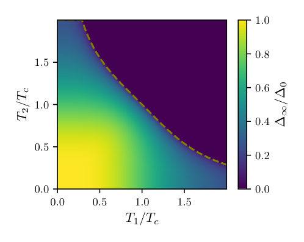
<figcaption class="paper-figure-caption"><b>Fig 1.</b> FIG. 1. Steady-state gap ∆∞(in units of zero temperature gap ∆0) as a function of temperatures of the first bath T1 and second bath T2. For an s-wave superconductor, we find new non-equilibrium solutions at T1 ̸= T2 with finite gap despite one of the baths being at a temperature larger than the critical temperature Tc in the equilibrium. The olive line represents the second-order phase-transition line.</figcaption>
</figure>
<figure class="paper-figure-card">
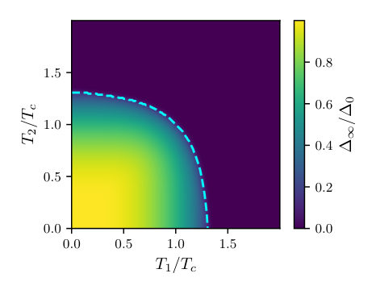
<figcaption class="paper-figure-caption"><b>Fig 2.</b> FIG. 2. Steady-state gap as a function of temperatures of the first bath T1 and second bath T2 for an s-wave supercon- ductor with strong inherent scattering γ1 ≈γ0, leading to a steady state well described by a temperature determined by the stationarity of energy, Eq. (12).</figcaption>
</figure>
<figure class="paper-figure-card">
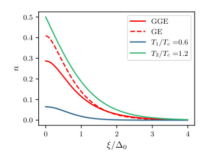
<figcaption class="paper-figure-caption"><b>Fig 3.</b> FIG. 3. Different steady state distribution of quasiparticles at the bath temperatures T1/Tc = 0.6 and T2/Tc = 1.2. Red curve (GGE) corresponds to the non-equilibrium steady state, stabilized by the interplay of the two baths, Eq (9). Dashed line (GE) represents the thermal occupation obtained from the energy rate equation (12) in case of strong inherent scat- tering γ1 ∼γ0. The blue and green curves correspond to thermal distributions at the temperatures of the two baths, reached if system would be coupled to only one of them.</figcaption>
</figure>
<figure class="paper-figure-card">

<figcaption class="paper-figure-caption"><b>Fig 4.</b> FIG. 4. (a) Steady-state gap ∆∞/∆0 as a function two tem- perature baths T1 and T2 for d-wave superconductor. Dis- tribution of quasiparticles in the equilibrium at T1/Tc = T2/Tc = 0.1 (b), and in the steady state with T1/Tc = 1.7 and T2/Tc = 0.3 (c).</figcaption>
</figure>
<figure class="paper-figure-card">

<figcaption class="paper-figure-caption"><b>Fig 5.</b> FIG. 5. Dependence of the steady state gap on the relative strength α = α+−/(α++ + α−−) of scattering and two-particle creation/annihilation term for the s-wave pairing case. Results for α = 1/4, 4 are comparable to the α = 1 considered in the main text, emphasising that our results are not fine tuned to a specific choice of α.</figcaption>
</figure>
</div>

<p><strong>Summary.</strong> This theoretical study explores stabilizing superconductivity in non-equilibrium steady states by coupling a BCS superconductor to two baths at different temperatures. Using a generalized Gibbs ensemble approach, the authors demonstrate that non-thermal dissipation can sustain a superconducting order parameter even when equilibrium theory predicts its absence. This mechanism is robust for both s-wave and d-wave symmetries.</p>
<p><strong>Why it may be interesting.</strong> This work directly addresses non-equilibrium quantum dynamics, which is highly relevant to AMO physics and quantum optics, particularly in engineered superconducting circuits or superconducting qubits where external driving and dissipation are used to control quantum states.</p>
<details>
<summary>Detailed structure</summary>
<p><strong>Main problem.</strong> The paper investigates how to stabilize superconducting order parameters (s-wave and d-wave) in non-equilibrium steady states by coupling the system to multiple thermal baths at different temperatures.</p>
<p><strong>Main result.</strong> Non-equilibrium dissipation can induce a finite superconducting gap ($\Delta_\infty$) even when the system is in a regime where equilibrium theory predicts superconductivity is suppressed, demonstrating a 'greenhouse effect'.</p>
<p><strong>Method.</strong> The study employs an open-system approach using a time-dependent generalized Gibbs ensemble (tGGE) formalism to solve the steady-state self-consistency equations.</p>
<p><strong>Model / system.</strong> The system is a BCS superconductor (s-wave and d-wave) coupled to two thermal baths at temperatures $T_1$ and $T_2$. The dynamics are governed by a Lindblad master equation, leading to self-consistent equations for the gap and quasiparticle occupation numbers.</p>
<p><strong>Key observables.</strong> Non-thermal pairing gap ($\Delta_\infty$), quasiparticle occupation numbers ($n_{p,\sigma}$), and the steady-state chemical potentials ($\mu_{p,\sigma}$).</p>
<p><strong>Important parameters / regimes.</strong> The relative strength parameter $\alpha$, the coupling rates ($\gamma_0$), and the ratio of intrinsic to dissipative scattering rates ($\gamma_1/\gamma_0$).</p>
<p><strong>Assumptions / limitations.</strong> The use of the Generalized Gibbs Ensemble (GGE) ansatz, which assumes quasiparticles are well-defined on intermediate timescales, and the Markovian description of the thermal baths.</p>
<p><strong>Figures summary.</strong> Figures illustrate the finite steady-state gap ($\Delta_\infty$) existing when bath temperatures are mismatched, showing dependence on $T_1/T_c$ and $T_2/T_c$ for both s-wave and d-wave symmetries. Other figures compare GGE vs. GE distributions and show gap dependence on the parameter $\alpha$.</p>
<p><strong>Paper structure.</strong> The paper develops the open-system formalism, derives the steady-state self-consistency equations using the tGGE, analyzes the dependence on the dissipation parameter $\alpha$, and finally presents results for s-wave and d-wave symmetries, contrasting the non-equilibrium stabilization mechanism with equilibrium predictions.</p>
</details>
<details>
<summary>Abstract</summary>
<p>Stabilizing superconductivity beyond its equilibrium regime has been one of the quests of nonequilibrium state engineering. We report the presence of nonthermal pairing gap in BCS superconductors coupled to two thermal baths, where one of the baths can be at a temperature well above the equilibrium $T_c$. Superconducting state is enabled by a highly non-equilibrium steady state stabilized by weak coupling to baths that break detailed balance condition. The steady-state is well described by a generalized Gibbs ensemble parametrized with chemical potentials for associated Bogoliubov quasiparticle. A strong, non-perturbative effect is reported for both $s$-wave and $d$-wave superconductors, and its possible realization in cavity-based experiments is discussed.</p>
</details>
<p><sub><a href="#top">↑ back to top</a></sub></p>

<p><a id="paper-2609.10510"></a></p>
<h3 id="phase-transitions-in-first-detection-statistics-of-monitored-long-range-quantum-walks">⭐ <a href="http://arxiv.org/abs/2609.10510v1">Phase transitions in first-detection statistics of monitored long-range quantum walks</a></h3>
<p><strong>Highlighted author(s):</strong> Giovanna Morigi<br>
<strong>Authors:</strong> Sayan Roy, Shamik Gupta, Giovanna Morigi, Gabriele Perfetto<br>
<strong>Type:</strong> theory · <strong>Category:</strong> statistical mechanics · <strong>PDF:</strong> <a href="https://arxiv.org/pdf/2609.10510v1">https://arxiv.org/pdf/2609.10510v1</a><br>
<strong>Analysis basis:</strong> full PDF text, analyzed in chunks
<strong>Topic relevance:</strong> 🔥 <code>quantum measurements</code> <strong>4/5</strong> · <code>Full counting statistics</code> <strong>1/5</strong> · <code>analog quantum simulation</code> <strong>1/5</strong> · <code>correlated / nonlocal dissipation</code> <strong>1/5</strong> · <code>driven-dissipative phase transition</code> <strong>1/5</strong> · <code>interference shaping light</code> <strong>1/5</strong> · <code>non-equilibrium universality</code> <strong>1/5</strong></p>
<div class="figure-strip-hint">↔ Scroll figures horizontally</div>
<div class="paper-figures-scroll">
<figure class="paper-figure-card">

<figcaption class="paper-figure-caption"><b>Fig 1.</b> FIG. 1. (a) A walker coherently hops along a ring with hopping amplitude decaying as d−α with the distance d. (b) A detector monitors stroboscopically the initial site |0⟩, a positive detection event terminates the dynamics. We show that the first-detection probability decays algebraically as Fn ∼n−β, where β depends critically on α, as visible in (c), identifying different regimes of the transient quantum walk. The nonanalytic points at α = 1, 2, 3 reflect a phase transition in the spectrum of the long-range model. Instead, the nonanalytic point at α = 5/3 is due to the projective effect of measurements.</figcaption>
</figure>
<figure class="paper-figure-card">

<figcaption class="paper-figure-caption"><b>Fig 2.</b> FIG. 2. Recurrent to transient transition. (a) Density plot of the total detection probability P∞= P</figcaption>
</figure>
<figure class="paper-figure-card">
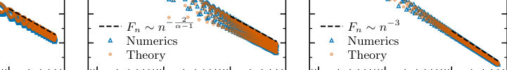
<figcaption class="paper-figure-caption"><b>Fig 3.</b> FIG. 3. Long-time algebraic decay in the transient phase. Log-log plot of the first-detection probability Fn as a function of number of measurement n. The panels correspond to different regimes of hopping exponent (a) 2 &lt; α &lt; 3 with α = 2.4, (b) 5/3 ≤α &lt; 2 with α = 1.8 and (c) 1 &lt; α ≤5/3 with α = 1.5. Blue triangles represent the result from exact numerical evaluations based on the quantum renewal equation with N = 106, γ = 1, τ = 1. Orange circles represent the corresponding theoretical predictions for the long-time asymptotics. Black dashed lines are obtained from numerical fitting according to the power-law model indicated in the corresponding panel.</figcaption>
</figure>
</div>

<p><strong>Summary.</strong> This work analyzes the first-detection statistics of quantum walks with long-range hopping, showing that the hopping exponent $\alpha$ dictates the walk's fundamental nature. A continuous phase transition occurs at $\alpha=1$, separating localized (recurrent) from diffusive (transient) behavior. The decay rates are determined by complex interference effects between different energy modes, providing a tunable mechanism for controlling quantum transport.</p>
<p><strong>Why it may be interesting.</strong> The study provides a concrete example of how measurement back-action fundamentally alters quantum transport properties, leading to critical behavior governed by spectral properties, which is highly relevant for understanding open quantum systems.</p>
<details>
<summary>Detailed structure</summary>
<p><strong>Main problem.</strong> The paper investigates how the first-detection return probability (FDRP) of quantum walks changes and exhibits continuous phase transitions based on the long-range hopping exponent $\alpha$. It analyzes the interplay between measurement back-action and coherent quantum dynamics.</p>
<p><strong>Main result.</strong> The exponent $\alpha=1$ marks a continuous phase transition separating recurrent ($\alpha<1$) from transient ($\alpha>1$) quantum walks. The decay exponent $\beta(\alpha)$ is non-monotonic, and the dynamics are governed by interference between infrared and ultraviolet energy modes.</p>
<p><strong>Method.</strong> The analysis uses generating functions and asymptotic analysis of polylogarithms derived from the quantum renewal equation to determine the long-time decay laws for the FDRP.</p>
<p><strong>Model / system.</strong> The model is a quantum walker on a chain undergoing unitary evolution interrupted by projective measurements at stroboscopic times. The hopping strength decays as $d^{-\alpha}$, controlled by the exponent $\alpha$.</p>
<p><strong>Key observables.</strong> First-Detection Return Probability ($F_n$), Total detection probability ($P_\infty$), Decay exponent ($\beta(\alpha)$), Spectral dimension ($d_s$).</p>
<p><strong>Important parameters / regimes.</strong> Hopping exponent $\alpha$, Stroboscopic time $\tau$, Critical values $\alpha=1, 2, 3$.</p>
<p><strong>Assumptions / limitations.</strong> The analysis relies on asymptotic approximations for large $n$ and the use of keyhole-contour representations for polylogarithms.</p>
<p><strong>Figures summary.</strong> Figures illustrate the dependence of FDRP on $\alpha$, highlighting phase transitions at $\alpha=1, 2, 3$, and show the comparison of theoretical decay laws with numerical data for different $\alpha$ regimes.</p>
<p><strong>Paper structure.</strong> The paper builds the analysis by defining the quantum renewal equation, deriving the generating function for the FDRP, and then performing detailed asymptotic analysis across different regimes of $\alpha$ to map out the functional dependence of the decay exponent $\beta$.</p>
</details>
<details>
<summary>Abstract</summary>
<p>In a quantum walk, the first-detection return probability (FDRP) characterizes salient features, determining whether the quantum walk is transient or recurrent. We study the FDRP of quantum walks on a chain where the initial site is stroboscopically monitored by a detector and the walker performs long-range hopping between sites. We assume that the hopping strength decays with the distance $d$ as $d^{-α}$ and $α\geq 0$ and show that the power-law exponent $α$ critically determines the behavior of the FDRP. The value $α=1$ separates recurrent ($α<1$) from transient ($α>1$) quantum walks through a continuous phase transition in the total detection probability. For $α<1$, strong long-range hopping induces localization, resulting in unit total detection probability. Instead, for $α>1$ the long-range walk is transient and the return probability decays algebraically as a function of time as $t^{-β}$. The associated decay exponent $β$ features nonanalytic points as a function of $α$. Such singularities are not exclusively determined by the low-energy spectrum, but are caused by the interference between infrared and ultraviolet energy modes induced by projective measurements, signalling the emergence of critical behavior intrinsic to the non-unitary dynamics. These dynamics are solely controlled by tuning the long-range exponent $α$ and can thus be experimentally probed in atomic and molecular systems.</p>
</details>
<p><sub><a href="#top">↑ back to top</a></sub></p>

<p><a id="paper-2609.10486"></a></p>
<h3 id="faster-quantum-monte-carlo-simulation-by-random-compilation">⭐ <a href="http://arxiv.org/abs/2609.10486v1">Faster Quantum Monte Carlo Simulation by Random Compilation</a></h3>
<p><strong>Highlighted author(s):</strong> Andrew J. Daley<br>
<strong>Authors:</strong> John M. Martyn, Joshua Lin, Neill C. Warrington, Isaac L. Chuang, Andrew J. Daley<br>
<strong>Type:</strong> theory · <strong>Category:</strong> numerical methods · <strong>PDF:</strong> <a href="https://arxiv.org/pdf/2609.10486v1">https://arxiv.org/pdf/2609.10486v1</a><br>
<strong>Analysis basis:</strong> full PDF text, analyzed in chunks
<strong>Topic relevance:</strong> <code>methods for driven-dissipative</code> <strong>3/5</strong> · <code>Keldysh / 2PI / non-Gaussian methods</code> <strong>1/5</strong> · <code>analog quantum simulation</code> <strong>1/5</strong> · <code>driven-dissipative phase transition</code> <strong>1/5</strong> · <code>quantum measurements</code> <strong>1/5</strong></p>
<div class="figure-strip-hint">↔ Scroll figures horizontally</div>
<div class="paper-figures-scroll">
<figure class="paper-figure-card">

<figcaption class="paper-figure-caption"><b>Fig 1.</b> FIG. 1. Overview of the randomly compiled QMC (RC-QMC) framework. Standard QMC algorithms estimate an observable ⟨ˆO⟩by averaging an estimator function F( ˆO, X) over a random variable X sampled from a fixed approximate distribution eP (see Eq. (4)), incurring systematic error O(ϵ). RC-QMC instead averages over a collection of approximate distributions { ePj} weighted by probabilities pj (see Eq. (17)), which suppresses the systematic error to O(ϵ2) at essentially the same computational cost. This improvement is demonstrated in two settings: Randomly Compiled Path Integral Monte Carlo for thermal state estimation, where QDrift replaces the standard Trotter decomposition and eliminates the...</figcaption>
</figure>
<figure class="paper-figure-card">
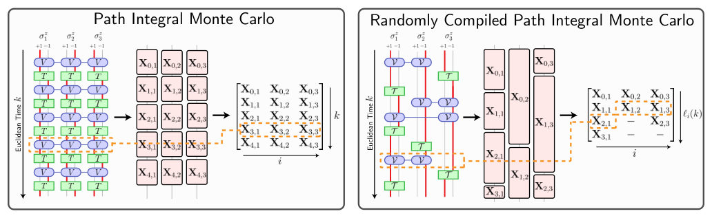
<figcaption class="paper-figure-caption"><b>Fig 2.</b> FIG. 2. (Left) Standard path integral Monte Carlo on 3 sites: Trotterization is used to decompose e−βH into a product of evolution under the potential (V ) and kinetic (T) energies, and particle positions take values ±1 in the σz basis at each time step k. The particle paths are then aggregated into an array X, indexed by site i and time step k. The dashed orange line depicts the mapping of a single time step to a particle configuration in X. (Right) Randomly compiled path integral Monte Carlo on 3 sites: individual potential (V) and kinetic (T ) energy terms are sampled according to QDrift, and a particle’s position can change only when its corresponding kinetic term is sampled. The paths...</figcaption>
</figure>
<figure class="paper-figure-card">
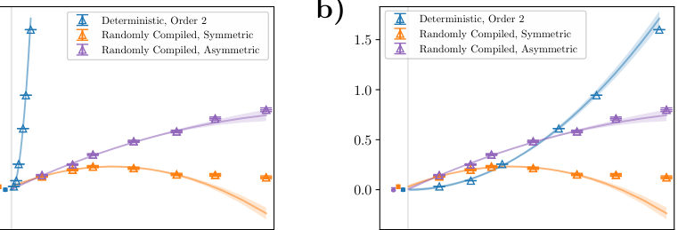
<figcaption class="paper-figure-caption"><b>Fig 3.</b> FIG. 3. Comparison of error in the observable ⟨ˆV ⟩between standard path integral Monte Carlo (using 2nd-order Trotterization) and randomly compiled path integral Monte Carlo (using symmetric and asymmetric approaches), where the error has been defined relative to the continuum limit of the standard algorithm (denoted ⟨ˆV ⟩cont). Inner error bars for the randomly compiled methods denote the MCMC sampling errors within QDrift sequences, and outer error bars are the total error estimate including the variance due to averaging over different QDrift sequences (as described in Appendix I). Continuum limit extrapolated values are shown at slightly negative offset values for clarity. a): Here the...</figcaption>
</figure>
<figure class="paper-figure-card">

<figcaption class="paper-figure-caption"><b>Fig 4.</b> FIG. 4. An illustration of the quantum trajectories method (left), and the randomly compiled quantum trajectories method (right). Here, pure state trajectories are simulated by time-evolving an initial state |ψ⟩using Trotterization (denoted by blue rectangles), with intermediate quantum jumps applied randomly (denoted by red crosses). In the standard algorithm, each Trotter step is taken to be the same approximation. In the randomly compiled algorithm, each Trotter step is randomly sampled from a set of approximations. At the end of evolution, the trajectories are aggregated together to estimate an observable ⟨ˆO⟩(t) according to Eqs. (13) and (38).</figcaption>
</figure>
<figure class="paper-figure-card">

<figcaption class="paper-figure-caption"><b>Fig 5.</b> FIG. 5. Comparison between the standard (deterministic) and randomly compiled quantum trajectories methods applied to the dissipative Bose-Hubbard model. a): Simulations conducted on N = 10 spins with dissipation rate γ = 0.05, using Trotterization of various orders. We illustrate the time series for energy and the correlation function ⟨a† N/2aN/2+1⟩+ h.c. at a fixed number of Trotter steps (r = 40) (top), and the corresponding RMS error as a function of computational cost (bottom). b): Simulations conducted on N = 30 spins with dissipation rates γ = 0.04 (top) and γ = 0.08 (bottom), using 2nd-order Trotterization. Here we illustrate the time series for energy at a fixed number of Trotter...</figcaption>
</figure>
</div>

<p><strong>Summary.</strong> This paper introduces Randomly Compiled Quantum Monte Carlo (RC-QMC), a novel framework designed to suppress systematic errors in QMC simulations by averaging over multiple approximations. By borrowing concepts from randomized compiling, it achieves a significant reduction in systematic error scaling for simulating thermal states and open quantum dynamics with minimal computational overhead.</p>
<p><strong>Why it may be interesting.</strong> This work provides a powerful, generalizable numerical technique for improving the accuracy of simulating complex quantum dynamics, which is crucial for modeling open quantum systems and strongly correlated materials.</p>
<details>
<summary>Detailed structure</summary>
<p><strong>Main problem.</strong> The primary goal is to improve the accuracy and efficiency of Quantum Monte Carlo (QMC) simulations by mitigating systematic errors inherent in fixed approximations.</p>
<p><strong>Main result.</strong> The proposed Randomly Compiled QMC (RC-QMC) framework achieves a superior systematic error scaling ($O(\epsilon^2)$ vs $O(\epsilon)$) compared to standard QMC methods, with comparable computational cost.</p>
<p><strong>Method.</strong> RC-QMC utilizes the concept of randomized compiling, averaging over a family of approximations to suppress systematic errors, which is demonstrated via specialized techniques like randomly corrected Trotterization.</p>
<p><strong>Model / system.</strong> The methods are applied to general quantum systems, specifically simulating thermal states (using Path Integral QMC) and open system dynamics (using the Quantum Trajectories Method).</p>
<p><strong>Key observables.</strong> Target expectation values $\langle\hat{O}
angle = 	ext{tr}(\hat{O}
ho)$, and the systematic error scaling of the approximation.</p>
<p><strong>Important parameters / regimes.</strong> Systematic error $\epsilon$, inverse temperature $eta$, time step $\Delta t$, and the number of Trotter steps $r$.</p>
<p><strong>Assumptions / limitations.</strong> The error reduction applies only to systematic errors, not statistical sampling errors or the sign problem. The framework relies on constructing interpolating sequences for error bounding.</p>
<p><strong>Figures summary.</strong> Figures illustrate the comparison between standard QMC (fixed approximation, $O(\epsilon)$ error) and RC-QMC (average over approximations, $O(\epsilon^2)$ error) at similar computational costs. Other figures detail the structure of the error bounds using interpolating sequences.</p>
<p><strong>Paper structure.</strong> The paper establishes the general QMC framework, identifies systematic error sources (e.g., Trotterization), introduces RC-QMC via randomized compiling, and then applies this framework to derive specific error bounds for Path Integral QMC and the Quantum Trajectories Method.</p>
</details>
<details>
<summary>Abstract</summary>
<p>Quantum Monte Carlo (QMC) algorithms are among the most powerful classical methods for simulating quantum systems, yet their accuracy is often limited by the systematic errors in the approximations used, such as Trotterization. Here we introduce randomly compiled quantum Monte Carlo (RC-QMC) as a general framework that suppresses these systematic errors by averaging over a family of approximations rather than relying on a single fixed one. This strategy is grounded in the concept of randomized compiling from quantum computing, which suppresses errors by sampling over quantum gates, at essentially no additional computational cost. Consequently, our framework achieves a computational advantage over standard QMC methods when estimating a target state to a desired level of accuracy. We illustrate this advantage on two key Monte Carlo algorithms: (1) path integral quantum Monte Carlo for estimating thermal states, and (2) the quantum trajectories method for simulating open system dynamics. In aggregate, these results represent a cross-fertilization of quantum and classical algorithms, are readily generalizable to other QMC methods, and suggest wider applications in classical simulation.</p>
</details>
<p><sub><a href="#top">↑ back to top</a></sub></p>

<p><a id="paper-2609.09296"></a></p>
<h3 id="distinguishability-transitions-from-global-quantum-snapshots">⭐ <a href="http://arxiv.org/abs/2609.09296v1">Distinguishability Transitions from Global Quantum Snapshots</a></h3>
<p><strong>Highlighted author(s):</strong> Sarang Gopalakrishnan<br>
<strong>Authors:</strong> Catherine McCarthy, Sarang Gopalakrishnan, Romain Vasseur<br>
<strong>Type:</strong> theory · <strong>Category:</strong> statistical mechanics · <strong>PDF:</strong> <a href="https://arxiv.org/pdf/2609.09296v1">https://arxiv.org/pdf/2609.09296v1</a><br>
<strong>Analysis basis:</strong> full PDF text, analyzed in chunks
<strong>Topic relevance:</strong> <code>quantum measurements</code> <strong>3/5</strong></p>
<div class="figure-strip-hint">↔ Scroll figures horizontally</div>
<div class="paper-figures-scroll">
<figure class="paper-figure-card">
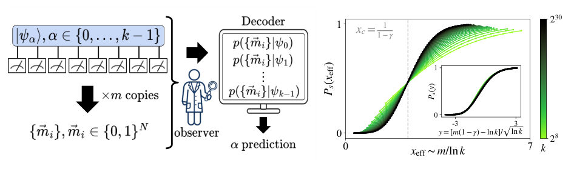
<figcaption class="paper-figure-caption"><b>Fig 1.</b> FIG. 1. Left: Protocol for distinguishing k random states with m global snapshots. In this setup, an observer is presented with m copies of a random state |ψα⟩with α ∈{0, . . . , k −1} and provided with exact knowledge of all k states. After measuring each site of each of the m copies in the computational basis to obtain a set of bitstrings {⃗mi}, the observer queries a decoder in order to guess the label α. Here we take the decoder to be an optimal Bayesian classifier that outputs the label α associated with the largest probability p({⃗mi}|ψα), where p({⃗mi}|ψj) is computed for all j ∈{0, . . . , k −1} from the Born probabilities associated with the bitstrings {⃗mi}. Right: Decoder success...</figcaption>
</figure>
<figure class="paper-figure-card">
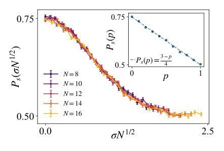
<figcaption class="paper-figure-caption"><b>Fig 2.</b> FIG. 2. Success probability Ps(σ, N) of decoding an N- qubit random state subject to random coherent errors act- ing on each site j as Uj = e−iϵjXj, where ϵj are indepen- dently drawn from a Gaussian distribution of variance σ2. The success probability decays towards 1/2 for large values of σN 1/2. Inset: for a state under a global depolarizing channel of strength p, the decoder success probability takes the form Ps(p) = (3 −p)/4.</figcaption>
</figure>
<figure class="paper-figure-card">
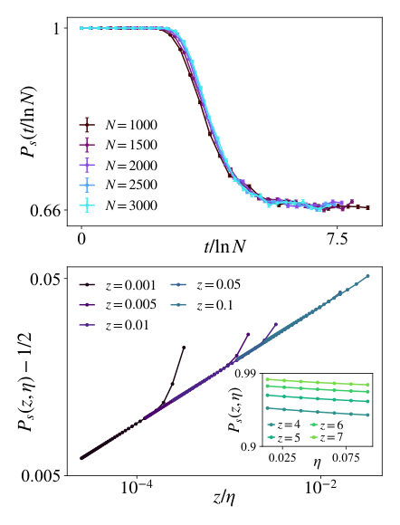
<figcaption class="paper-figure-caption"><b>Fig 3.</b> FIG. 3. Top: onset of anti-concentration in finite-depth Clifford circuits. The decoder success probability Ps(t, N) decays from one to the expected value for random Clifford circuits Ps(t →∞, N) = 2/3 as the depth t of the circuit is increased. The curves for different system sizes collapse neatly when rescaling by t/ ln(N), indicating that anti-concentration sets in on logarithmic timescales. Bottom: The success prob- ability of an RMPO displays z/η scaling with η the rescaled noise strength in the small-z (deep) limit, and is indepen- dent of η in the large-z (shallow) limit (inset). The scaling in these two regimes is consistent with behavior seen in the linear XEB.</figcaption>
</figure>
<figure class="paper-figure-card">

<figcaption class="paper-figure-caption"><b>Fig 4.</b> FIG. 4. Success probability of phase-random states measured in a basis defined by the rotation U = N</figcaption>
</figure>
</div>

<p><strong>Summary.</strong> This work analyzes the limits of distinguishing between many random quantum states using only measurements in the computational basis. It finds a sharp phase transition in the success probability of a Bayesian classifier, characterized by a critical scaling variable $x = m / \ln k$. The results provide theoretical benchmarks for quantum state tomography and characterization protocols.</p>
<p><strong>Why it may be interesting.</strong> The study connects fundamental concepts of quantum state distinguishability, which is crucial for quantum characterization, to statistical physics concepts like phase transitions, providing a quantitative measure of how much information is encoded in global measurements.</p>
<details>
<summary>Detailed structure</summary>
<p><strong>Main problem.</strong> The paper investigates the ability of Bayesian classifiers to distinguish between multiple random quantum states using only measurements in the computational basis.</p>
<p><strong>Main result.</strong> A phase transition is identified in the distinguishability game, occurring when the ratio of shots to the logarithm of the number of states, $x = m / \ln k$, crosses a critical threshold $x_c$.</p>
<p><strong>Method.</strong> The analysis uses Bayesian classification theory applied to measurement outcomes (bitstrings) from quantum states, deriving scaling laws and threshold values via saddle-point approximations.</p>
<p><strong>Model / system.</strong> The system involves $k$ candidate quantum states $|\psi_\alpha
angle$ generated by generic time evolution (e.g., random circuits) on $N$ qubits. Measurements are restricted to the computational basis, yielding bitstrings $\vec{m}$.</p>
<p><strong>Key observables.</strong> Success probability ($P_s$) of the Bayesian classifier, and the critical ratio $x = m / \ln k$.</p>
<p><strong>Important parameters / regimes.</strong> Number of states ($k$), number of shots ($m$), number of qubits ($N$), and the effective variable $x_{	ext{eff}}$.</p>
<p><strong>Assumptions / limitations.</strong> The analysis initially assumes Haar-random states, but extends to noisy and low-depth circuits. The threshold derivation relies on specific asymptotic approximations.</p>
<p><strong>Figures summary.</strong> Figures illustrate the protocol for state discrimination, showing the success probability $P_s$ transitioning sharply at the critical value $x_c$ when plotted against the effective scaling variable $x_{	ext{eff}}$.</p>
<p><strong>Paper structure.</strong> The paper first establishes the problem of distinguishing states via global snapshots, derives the phase transition scaling $m \sim \ln k$, and then extends this analysis to incorporate noise, low-depth circuits, and specific circuit models (like Clifford circuits) to test the robustness of the transition.</p>
</details>
<details>
<summary>Abstract</summary>
<p>Quantum states generated by generic time evolution are locally featureless: local measurements return random outcomes that are identical for all states. However, global snapshots in the computational basis are surprisingly effective at distinguishing between quantum states. We explore the ability of Bayesian classifiers to discriminate between many random quantum states using a small number of measurement outcomes. We identify a phase transition in the ability of the classifier to distinguish between $k$ candidate states with $m$ shots controlled by the variable $x = m / \ln k$, and derive the threshold value $x_c$. We extend our results to low-depth circuits near the onset of anti-concentration, as well as to noisy circuits and phase-random states.</p>
</details>
<p><sub><a href="#top">↑ back to top</a></sub></p>

<p><a id="paper-2609.09464"></a></p>
<h3 id="prethermal-ripplons-in-quenched-binary-bose-einstein-condensates"><a href="http://arxiv.org/abs/2609.09464v1">Prethermal ripplons in quenched binary Bose-Einstein condensates</a></h3>
<p><strong>Authors:</strong> Yanda Geng, Stephen Eckel, Gretchen K. Campbell, Ian B. Spielman<br>
<strong>Type:</strong> both · <strong>Category:</strong> statistical mechanics · <strong>PDF:</strong> <a href="https://arxiv.org/pdf/2609.09464v1">https://arxiv.org/pdf/2609.09464v1</a><br>
<strong>Analysis basis:</strong> full PDF text, analyzed in chunks
<strong>Topic relevance:</strong> 🔥 <code>scars &amp; prethermalization</code> <strong>5/5</strong> · <code>analog quantum simulation</code> <strong>3/5</strong> · <code>driven-dissipative phase transition</code> <strong>3/5</strong> · <code>non-equilibrium universality</code> <strong>3/5</strong> · <code>Keldysh / 2PI / non-Gaussian methods</code> <strong>2/5</strong> · <code>methods for driven-dissipative</code> <strong>2/5</strong> · <code>Frenkel-Kontorova</code> <strong>1/5</strong></p>
<div class="figure-strip-hint">↔ Scroll figures horizontally</div>
<div class="paper-figures-scroll">
<figure class="paper-figure-card">

<figcaption class="paper-figure-caption"><b>Fig 1.</b> FIG. 1. The long road to equilibrium. A schematic illustration of the relaxation process (top) is shown along with representative spin-selective images of the |↑⟩density (bottom). (i) A microwave pulse at t = 0 transfers an initially spin-polarized BEC into an equal superposition of |↑⟩(dark blue) and |↓⟩. The orientation of a magnetic field gradient is indicated. (ii) Initial spin structure forms nearly deterministically; (iii) small initial fluctuations then seed random droplet patterns that coalesce and coarsen. (iv) After about 500 ms an interface forms and (v) becomes single-valued by 2000 ms (red curves). Ripplons with different wavenumber k combine to give the observed interface...</figcaption>
</figure>
<figure class="paper-figure-card">
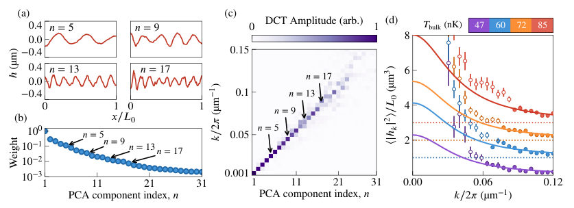
<figcaption class="paper-figure-caption"><b>Fig 2.</b> FIG. 2. Fluctuations of a prethermal interface, with thold = 2.0 s. (a) PCA components of h(x) for n = 5, 9, 13, and 17. (b) Normalized PCA weights. (c) DCT amplitudes of each PCA component. (d) Power spectrum ⟨|hk|2⟩, measured at four bulk temperatures (vertically offset for clarity) using ≈70 experimental realizations per temperature, plotted along with the corresponding equilibrium prediction (no free parameters).</figcaption>
</figure>
<figure class="paper-figure-card">

<figcaption class="paper-figure-caption"><b>Fig 3.</b> Figure 3(b) extends this analysis over the full range of k and for hold times 1 s to 4 s. The resulting Tk val- ues show that only high-k ripplon modes equilibrate with the bulk; at low-k, the mode temperatures exceed Tbulk and we empirically find that excessive temperature is well described by a power-law (Tk−Tbulk)/T0 = k−α, with ex- ponent α = 1.42(5) and prethermal temperature scale T0; the resulting data-collapse is shown in Fig. 3(b). These low-k modes decay extremely slowly, with a 5(1) s mea- sured decay time—much slower than the ∼10−1 s equi- libration timescale of the phonon bath, highlighting the prethermal nature of the interface system. The excess low-k occupation and slow...</figcaption>
</figure>
<figure class="paper-figure-card">

<figcaption class="paper-figure-caption"><b>Fig 4.</b> FIG. 3. Distribution functions and equilibration at Tbulk = 56 nK. (a) PDFs Pk for k1/(2π) = 0.026 µm−1 and k2/(2π) = 0.073 µm−1 at thold = 4 s. The histograms plot experi- mental data with corresponding normal distributions (solid curves). Dashed curves show the PDF corresponding to a phase-averaged ripplon coherent state with the same ripplon occupation. (b) Mode temperature as a function of k for three hold times. Solid curves show power-law fits with a common exponent and offset. Inset: log-log plot in terms of dimension- less quantities ¯Tk and ¯k showing data collapse. (c) Scattering processes in our L0 × L0 box. Circles connected by curves plot the energy of ripplons (red) and...</figcaption>
</figure>
<figure class="paper-figure-card">

<figcaption class="paper-figure-caption"><b>Fig 5.</b> FIG. 4. Minority thermal atom thermometry. (a) Effective potentials for thermal spin-↑atoms in the lowest three local transverse modes (solid curves), compared with the chemi- cal potential µ↑(dotted line). The shaded curves plot the condensate densities n↑/↓in blue/yellow respectively. (b) Spin-↑density profiles. Markers plot the measured total den- sity (thermal plus condensed) along with fits (solid curve) to our theoretical model, yielding the annotated temperatures. The shaded region shows the computed condensate density and highlights its vast difference in scale. Inset: Tbulk versus Tripplon obtained by fitting the high-k ripplon tail in Fig. 2(d) using Eq. (2) with Tripplon as the...</figcaption>
</figure>
</div>

<p><strong>Summary.</strong> This work experimentally demonstrates prethermalization in the ripplons at the interface of two immiscible Bose-Einstein condensates. The authors show that while high-momentum modes rapidly thermalize with the bulk, low-momentum modes remain trapped at elevated temperatures. This slow relaxation is attributed to kinematic isolation, providing a clear realization of non-equilibrium dynamics in quantum gases.</p>
<p><strong>Why it may be interesting.</strong> It provides a clean, experimentally accessible platform (BEC interfaces) to study fundamental non-equilibrium statistical mechanics concepts like prethermalization and energy partitioning in quantum many-body systems.</p>
<details>
<summary>Detailed structure</summary>
<p><strong>Main problem.</strong> The paper investigates how far-from-equilibrium quantum systems, specifically interfacial waves in BECs, approach thermal equilibrium, focusing on the phenomenon of prethermalization.</p>
<p><strong>Main result.</strong> Low-momentum ripplon modes exhibit persistent, elevated temperatures relative to the bulk phonon bath, forming a long-lived prethermal state due to kinematic isolation.</p>
<p><strong>Method.</strong> The study combines theoretical modeling (Bogoliubov-de Gennes formalism, Hamiltonian derivation) with experimental measurements of time-evolving interface height profiles and mode temperatures.</p>
<p><strong>Model / system.</strong> The system is a 1D interface between immiscible 2D Bose-Einstein condensates (BECs). The dynamics are modeled by interfacial capillary waves (ripplons) coupled to the bulk phonon modes.</p>
<p><strong>Key observables.</strong> Interface height profile $h(x)$, Power Spectral Density $\langle|h_k|^2
angle$, and the effective temperature $T_k$ of individual ripplon modes.</p>
<p><strong>Important parameters / regimes.</strong> Interfacial tension ($\sigma$), bulk temperature ($T_{	ext{bulk}}$), and the wave number $k$.</p>
<p><strong>Assumptions / limitations.</strong> The slow relaxation of low-momentum modes is attributed to kinematic isolation, meaning the absence of energy- and momentum-conserving relaxation processes coupling them to the bulk bath.</p>
<p><strong>Figures summary.</strong> Figures illustrate the relaxation process from initial quench to prethermal state, comparing measured power spectra to equilibrium predictions, and showing mode temperatures decaying with wave number and time.</p>
<p><strong>Paper structure.</strong> The paper develops the Hamiltonian for the ripplon field, analyzes the dispersion relation, and then presents experimental evidence showing that high-$k$ modes thermalize quickly while low-$k$ modes remain trapped in a non-equilibrium, prethermal state.</p>
</details>
<details>
<summary>Abstract</summary>
<p>Prethermal states--long-lived quasi-equilibrium configurations--occur in a wide range of physical systems that exhibit fast dephasing or reconfiguration followed by slow relaxation towards thermal equilibrium. We experimentally studied the 1D interface between immiscible 2D Bose-Einstein condensates (BECs); following a quench, the interfacial capillary waves (ripplons) quickly relaxed into a long-lived prethermal state characterized by a persistent non-equipartition of energy, evoking the classic Fermi-Pasta-Ulam-Tsingou problem. We directly measured the interface's height profile as it evolved in time, identified the contribution of individual ripplon modes, and find that, though their individual amplitudes are thermally distributed, they are not in thermal equilibrium--high-momentum modes rapidly equilibrated with the bulk phonon modes of the 2D BEC, while lower momentum modes remained at elevated temperatures, forming a long-lived prethermal configuration for the whole system. We attribute this to kinematic isolation: the absence of energy- and momentum-conserving relaxation processes in our system at ultracold temperature.</p>
</details>
<p><sub><a href="#top">↑ back to top</a></sub></p>

<p><a id="paper-2609.10216"></a></p>
<h3 id="information-capacity-of-quantum-statistics-fock-state-tests-of-a-discrete-binary-sequence-model-on-cloud-photonic-quantum-processors"><a href="http://arxiv.org/abs/2609.10216v1">Information capacity of quantum statistics: Fock-state tests of a discrete binary-sequence model on cloud photonic quantum processors</a></h3>
<p><strong>Authors:</strong> Chiran Wijesundara, Octavia T. Volpe, Dejan Stojkovic, Herbert Fotso, Tim Thomay<br>
<strong>Type:</strong> experiment · <strong>Category:</strong> quantum information and computing · <strong>PDF:</strong> <a href="https://arxiv.org/pdf/2609.10216v1">https://arxiv.org/pdf/2609.10216v1</a><br>
<strong>Analysis basis:</strong> full PDF text, analyzed in chunks
<strong>Topic relevance:</strong> 🔥 <code>QC/QI experiment</code> <strong>4/5</strong> · <code>Full counting statistics</code> <strong>3/5</strong> · <code>quantum optics experiment</code> <strong>3/5</strong> · <code>interference shaping light</code> <strong>2/5</strong> · <code>quantum measurements</code> <strong>2/5</strong> · <code>analog quantum simulation</code> <strong>1/5</strong></p>
<div class="figure-strip-hint">↔ Scroll figures horizontally</div>
<div class="paper-figures-scroll">
<figure class="paper-figure-card">

<figcaption class="paper-figure-caption"><b>Fig 1.</b> FIG. 2. Maximum partition-probability deviation from QM against sequence length n. Published parametrization (|2, 0⟩ input, mid-τ sweep): ℓa1 summed (plateau), one ℓa1 per sweep (1/n to a ∼1% floor), and ℓa1 tuned per setting (clean 1/n). The composition-consistent parametrization (black dashed) makes a single prediction, 1.02/n for |2, 0⟩over the full grid.</figcaption>
</figure>
<figure class="paper-figure-card">

<figcaption class="paper-figure-caption"><b>Fig 2.</b> FIG. 1. Sequence-model (solid) and QM (dotted) partition probabilities for a |2, 0⟩input at n = 100, with their differ- ence below. The green line marks the null-differential working point τ ∗= 0.414 where the model and QM agree for the (1, 1) outcome while disagreeing for (2, 0) and (0, 2).</figcaption>
</figure>
<figure class="paper-figure-card">

<figcaption class="paper-figure-caption"><b>Fig 3.</b> FIG. 3. Granularity signature: the QM probability of the outcome that the finite-n model forbids in the last rational grid gap τ ∈(cos2(π/2n), 1) falls as n−4.</figcaption>
</figure>
<figure class="paper-figure-card">
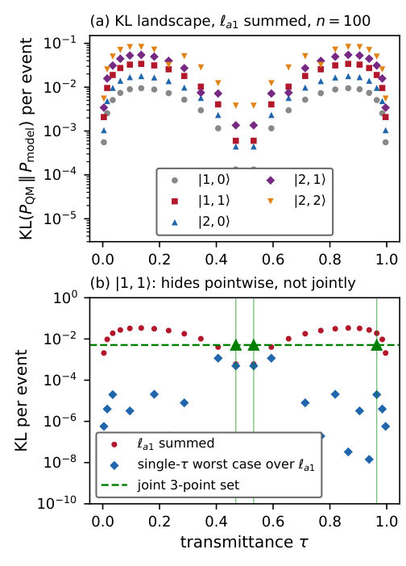
<figcaption class="paper-figure-caption"><b>Fig 4.</b> FIG. 4. Experiment-design optimization. (a) Discrimination landscape: per-event KL divergence between QM and the un- conditioned model (n = 100) for candidate input states. (b) For |1, 1⟩, the conditioned model evades any single-τ test by tuning ℓa1 (dots), but no single ℓa1 fits a set of transmittances jointly: the optimal 3-point set (triangles, dashed level) re- stores percent-scale discriminability.</figcaption>
</figure>
<figure class="paper-figure-card">
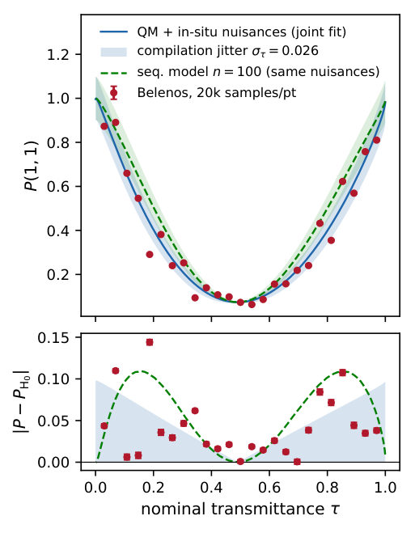
<figcaption class="paper-figure-caption"><b>Fig 5.</b> FIG. 5. Belenos full-curve campaign: P(1, 1) for the native |1, 1⟩input across 25 transmittances (20 000 samples each; statistical error bars are smaller than the symbols), against QM with jointly fitted in-situ nuisances (blue) and the uncon- ditioned sequence model at n = 100 under the same nuisances, in the published linear parametrization, evaluated on its na- tive rational transmittance grid (green). Shaded bands show the per-job compilation reproducibility (στ = 0.026, mea- sured from the scatter of the run itself) around each hypothe- sis; the lower panel shows the magnitude of the residuals with the same band around QM. The model requires a coherent +0.10–0.12 excess at both flanks;...</figcaption>
</figure>
</div>

<p><strong>Summary.</strong> This work tests the hypothesis that quantum mechanics emerges as the statistical limit of a discrete underlying theory by measuring the information capacity of photonic quantum processors. Using the binary-sequence model, the authors set stringent bounds on this capacity, demonstrating that current hardware can experimentally constrain fundamental quantum principles. The results establish photonic processors as quantitative tools for quantum foundations research.</p>
<p><strong>Why it may be interesting.</strong> It provides a direct, quantitative experimental test of the foundations of quantum mechanics by bounding a fundamental resource—information capacity—using state-of-the-art photonic quantum hardware.</p>
<details>
<summary>Detailed structure</summary>
<p><strong>Main problem.</strong> The paper investigates whether quantum mechanics is the statistical limit of a more fundamental discrete theory, which implies a finite information capacity for any physical system.</p>
<p><strong>Main result.</strong> The experimental results bound the information capacity of the quantum register from below, showing it exceeds $10^2$, and confirming that the composition-consistent model is required to recover quantum mechanics.</p>
<p><strong>Method.</strong> The authors used random-effects likelihood analysis and differential tests on cloud photonic quantum processors to compare measured photon statistics against predictions from various discrete sequence models.</p>
<p><strong>Model / system.</strong> The physical system is a cloud photonic quantum processor using programmable interferometers to measure photon Fock states. The theoretical framework is the binary-sequence model of Powers et al., which relates outcome probabilities to counting discrete sequences of length $n$.</p>
<p><strong>Key observables.</strong> Outcome probabilities, partition probabilities (e.g., $P(1, 1)$), and the deviation of measured statistics from the quantum partition law.</p>
<p><strong>Important parameters / regimes.</strong> The information capacity $n$ (bounded below by $>100$), the deviation scaling factor ($1.24/n$), and the statistical floor ($1.1 	imes 10^{-3}$).</p>
<p><strong>Assumptions / limitations.</strong> Dominant systematics (like calibration offsets) are treated as nuisance parameters, and the analysis relies on the composition-consistent parametrization being the correct physical model.</p>
<p><strong>Figures summary.</strong> Figures compare sequence-model vs. QM partition probabilities for $|2, 0
angle$ input at $n=100$, show maximum deviation vs. $n$ for different model treatments, and illustrate the QM probability of forbidden outcomes falling as $n^{-4}$.</p>
<p><strong>Paper structure.</strong> The paper progresses by establishing the theoretical premise (QM as a statistical limit), detailing the experimental setup on photonic processors, testing various discrete models (linear vs. composition-consistent), and finally deriving quantitative bounds on the information capacity.</p>
</details>
<details>
<summary>Abstract</summary>
<p>Our central premise is that quantum mechanics may be the statistical limit of a more fundamental discrete theory: any such theory equips a physical system with a finite information capacity, and its departure from quantum statistics is controlled by how much of that capacity the system uses. We show that commercial cloud photonic quantum processors have reached the precision required to bound this capacity from below, using the binary-sequence model of Powers et al. as the concrete test theory: outcome probabilities arise from counting discrete sequences of length $n$, quantum mechanics is recovered as $n \to \infty$, and $n$ measures the information capacity of the register behind a prepared state. Photon Fock states $|1\rangle$, $|1,1\rangle$, heralded $|2\rangle$, and cascaded beam-splitter pairs are measured on programmable interferometers with dominant systematics determined in situ. The model's composition-consistent parametrization, singled out by requiring that rotations compose, recovers quantum mechanics with deviations $1.24/n$; a random-effects likelihood analysis calibrated by parametric bootstrap excludes all $n \le 100$: the information capacity of the register carrying the two-photon state, if finite, exceeds $10^2$. Cascaded beam splitters test the composition law directly: the data are split-invariant, excluding naive count composition at $8σ$ and confirming the interference-sign rule. Model-independently, curve-averaged deviations from the quantum partition law larger than $2.3\times10^{-2}$ are excluded at 95% CL, and the originally published linear parametrization is excluded outright. Because the compilation offset is frozen per circuit it is calibratable, opening the $10^{-3}$ floor ($n \sim 10^3$) to current hardware: cloud photonic processors are quantitative instruments for quantum foundations, and information capacity an experimentally boundable quantity.</p>
</details>
<p><sub><a href="#top">↑ back to top</a></sub></p>

<p><a id="paper-2609.10342"></a></p>
<h3 id="quench-dynamics-in-nonreciprocal-aubry-andre-harper-model"><a href="http://arxiv.org/abs/2609.10342v1">Quench dynamics in nonreciprocal Aubry-André-Harper model</a></h3>
<p><strong>Authors:</strong> Zhiyu Pei, Yongxu Fu, Gao Xianlong<br>
<strong>Type:</strong> theory · <strong>Category:</strong> disordered systems and neural networks · <strong>PDF:</strong> <a href="https://arxiv.org/pdf/2609.10342v1">https://arxiv.org/pdf/2609.10342v1</a><br>
<strong>Analysis basis:</strong> full PDF text, analyzed in chunks
<strong>Topic relevance:</strong> 🔥 <code>non-equilibrium universality</code> <strong>4/5</strong> · <code>analog quantum simulation</code> <strong>3/5</strong> · <code>driven-dissipative phase transition</code> <strong>3/5</strong> · <code>Frenkel-Kontorova</code> <strong>1/5</strong> · <code>Keldysh / 2PI / non-Gaussian methods</code> <strong>1/5</strong> · <code>methods for driven-dissipative</code> <strong>1/5</strong> · <code>scars &amp; prethermalization</code> <strong>1/5</strong></p>
<div class="figure-strip-hint">↔ Scroll figures horizontally</div>
<div class="paper-figures-scroll">
<figure class="paper-figure-card">

<figcaption class="paper-figure-caption"><b>Fig 1.</b> FIG. 1: 1D nonreciprocal AAH model. (a) Complex en- ergy spectrum as a function of λ at δ = 0.5 for N = 233. (b) Phase diagram of the mean inverse participation ra- tio (MIPR) in the λ–δ plane for N = 233, where the color encodes the localization strength. (c) Parity-sorting scheme: in the extended phase (λ &lt; 2 + 2δ), eigenstates are ordered by ReE in ascending order, then by ImE for degenerate real parts; even (odd) indices correspond to positive (negative) imaginary parts.</figcaption>
</figure>
<figure class="paper-figure-card">

<figcaption class="paper-figure-caption"><b>Fig 2.</b> FIG. 2: Time-resolved quench dynamics between the strongly localized and deeply extended limits. (a)-(c) Quenches from the deeply extended state (λ = 0) to the strongly localized one (λ →∞). (d)-(f) Quenches from the strongly localized to the deeply extended state. (a), (b) Analytical results for Loschmidt echo L(τ) and the corresponding rate function g(τ) at δ = 0.2. (d), (e) Analytical results for L(τ) and the rate function g(τ) for multiple values of δ. (c), (f) Numerical L(τ) from the full spectrum of the initial Hamiltonian, demonstrating the energy-independent behavior for N = 233.</figcaption>
</figure>
<figure class="paper-figure-card">
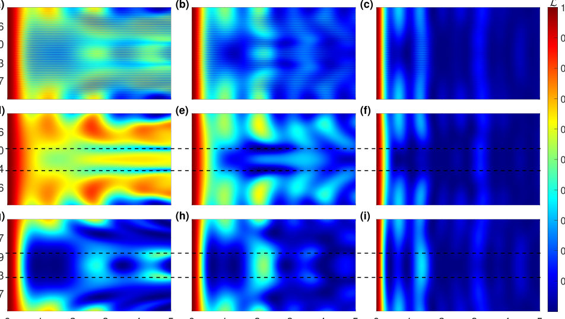
<figcaption class="paper-figure-caption"><b>Fig 3.</b> FIG. 3: Time-resolved quench dynamics starting from a deeply extended initial state (λi = 0). The vertical axis denotes the eigenstate index sorted according to the scheme in Fig. 1(c), and the horizontal axis represents the evolution time τ. The system is quenched from λi = 0 to (a) λf = 2 (extended phase), (b) λf = 3 (critical regime), and (c) λf = 5 (localized phase). To emphasize the distinction between even- and odd-index eigenstates, the contributions in (a)-(c) are replotted separately in (d)-(f) and (g)-(i) for the even and odd sectors, respectively. The region near the dashed lines corresponds to the gap of the postquench Hamiltonian. The region near the dashed lines corresponds to...</figcaption>
</figure>
<figure class="paper-figure-card">
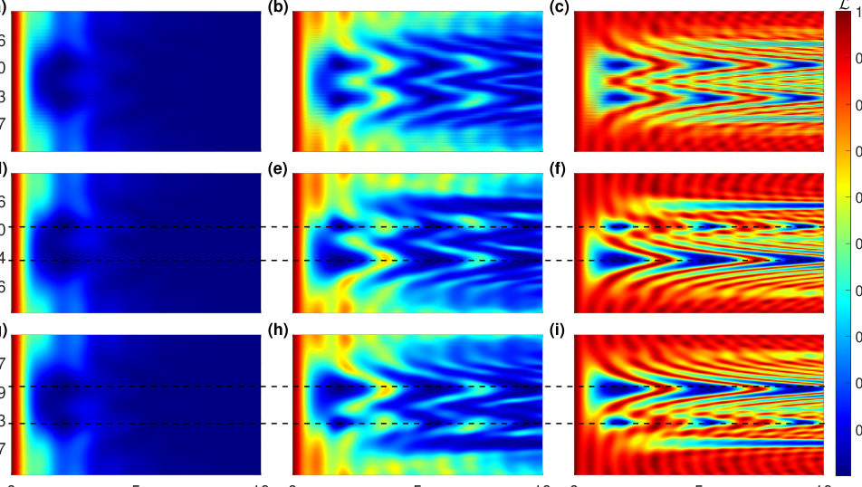
<figcaption class="paper-figure-caption"><b>Fig 4.</b> FIG. 4: Time-resolved quench dynamics starting from a strongly localized initial state (λi = 10000). The system is quenched from λi = 10000 to (a) λf = 2 (extended phase), (b) λf = 3 (critical regime), and (c) λf = 5 (localized phase). Same notation and line styles as in Fig. 3, with δ = 0.5 and N = 233.</figcaption>
</figure>
<figure class="paper-figure-card">
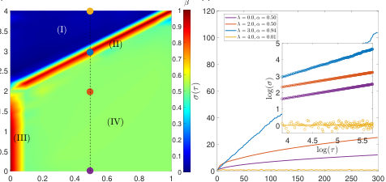
<figcaption class="paper-figure-caption"><b>Fig 5.</b> FIG. 5: Diffusion dynamics in the nonreciprocal AAH model. (a) Phase diagram of the diffusion exponent β in the λ-δ plane, colored by β, which divides the phase di- agram into four distinct regions: (I) localized phase, (II) critical phase, (III) reciprocal diffusive phase, and (IV) nonreciprocal diffusive phase. (b) Wavepacket spreading σ(τ) at δ = 0.5, for representative λ values along the dashed line in (a): λ = 0 (deeply diffusive phase), λ = 2 (diffusive phase), λ = 3 (critical phase), and λ = 4 (lo- calized phase). Insets show the double-logarithmic fits of log σ(τ) versus log τ, where the slope gives the diffusion exponent β. The system size is N = 233.</figcaption>
</figure>
</div>

<p><strong>Summary.</strong> This work analyzes quench dynamics in the nonreciprocal Aubry-André-Harper model, revealing that nonreciprocity dramatically alters transport behavior. By studying wavepacket diffusion and DQPTs, the authors show that the critical phase becomes ballistic, a reversal of the behavior seen in standard Hermitian systems. This establishes nonreciprocity as a key mechanism controlling quantum transport in quasiperiodic lattices.</p>
<p><strong>Why it may be interesting.</strong> The findings provide a detailed, quantitative understanding of how breaking time-reversal symmetry (nonreciprocity) fundamentally alters transport properties at critical points in quasiperiodic systems, which is highly relevant for engineered quantum materials.</p>
<details>
<summary>Detailed structure</summary>
<p><strong>Main problem.</strong> The study investigates how nonreciprocity affects quench dynamics and Dynamical Quantum Phase Transitions (DQPTs) in a quasiperiodic lattice.</p>
<p><strong>Main result.</strong> Nonreciprocity reverses the transport hierarchy, causing the critical phase to become ballistic ($eta=1$) while suppressing transport in the delocalized phase.</p>
<p><strong>Method.</strong> The analysis combines studying the Loschmidt echo for DQPTs with measuring the long-time power-law scaling exponent ($eta$) of the wavepacket root-mean-square displacement.</p>
<p><strong>Model / system.</strong> The system is the one-dimensional nonreciprocal Aubry-André-Harper (AAH) model, characterized by non-Hermitian hopping terms ($t_R 
eq t_L$) and a quasiperiodic potential.</p>
<p><strong>Key observables.</strong> Diffusion exponent $eta$ ($\sigma(	au) \propto 	au^eta$), Loschmidt echo $L(	au)$, and the energy-resolved nature of DQPTs.</p>
<p><strong>Important parameters / regimes.</strong> Nonreciprocity parameter $\delta$, quasiperiodic potential strength $\lambda$, and the golden ratio $\alpha$.</p>
<p><strong>Assumptions / limitations.</strong> The analysis relies on parity-sorted energy-spectrum classification to organize the quench landscape, and perturbative methods are used for some derivations.</p>
<p><strong>Figures summary.</strong> Figures illustrate the complex energy spectrum, the phase diagram using MIPR, and comparisons between perturbative solutions and numerical quench dynamics for even/odd indexed states.</p>
<p><strong>Paper structure.</strong> The paper develops two complementary diagnostics: energy-resolved DQPTs using the Loschmidt echo, and the $eta$-phase diagram derived from wavepacket diffusion, both highlighting the unique role of nonreciprocity.</p>
</details>
<details>
<summary>Abstract</summary>
<p>The critical phase of a non-Hermitian quasicrystal can support stronger transport than its surrounding delocalized phase. We demonstrate this anomalous behavior in the one-dimensional nonreciprocal Aubry-André-Harper model through a combined study of dynamical quantum phase transitions (DQPTs) and wavepacket diffusion. Using a parity-sorted energy-spectrum classification that directly encodes the generalized $\mathcal{PT}$ symmetry, we find that DQPTs in this system are energy-resolved, in contrast to the energy-independent DQPTs of Hermitian quasicrystals. The energy-resolved features are most pronounced when the initial and final Hamiltonians belong to different phases (localized or extended), and they are tied to the even-odd index structure of the spectrum, which we exploit to organize the quench-dynamical landscape. For wavepacket dynamics after a single-site quench, the diffusion exponent $β$, extracted from the long-time power-law scaling of the root-mean-square displacement $σ(τ)$, partitions the phase diagram into four distinct regimes. In the Hermitian limit the extended phase is ballistic ($β=1$), the critical phase is normally diffusive ($β=0.5$), and the localized phase yields $β\to 0$. Nonreciprocity reverses this hierarchy: the extended phase becomes normally diffusive, while the critical phase turns ballistic. We trace the anomalous $β=1$ at criticality to the self-similar multifractal structure of the critical eigenstates, whose nodal positions are organized by the golden ratio. A finite-size scaling ansatz built on the wave-front propagation yields $σ(τ)\proptoτ$. The parity-resolved DQPTs and the $β$-phase diagram establish two complementary dynamical diagnostics of nonreciprocal quasicrystals, in which nonreciprocity promotes transport at the critical point and suppresses it in the delocalized phase.</p>
</details>
<p><sub><a href="#top">↑ back to top</a></sub></p>

<p><a id="paper-2609.09805"></a></p>
<h3 id="electrically-tunable-two-photon-interference-from-remote-silicon-vacancy-centers-in-industrial-silicon-carbide"><a href="http://arxiv.org/abs/2609.09805v1">Electrically tunable, two-photon interference from remote silicon-vacancy centers in industrial silicon carbide</a></h3>
<p><strong>Authors:</strong> Fedor Dzmitryevich Hrunski, Daniel Scheller, Maximilian Hollendonner, Kim Ullerich, Shravan Kumar Parthasarathy, Chiun Fu, Andre Pointner, Wolfgang Knolle, Florian Kaiser, Durga Bhaktavatsala Rao Dasari, Roland Nagy<br>
<strong>Type:</strong> experiment · <strong>Category:</strong> quantum information and computing · <strong>PDF:</strong> <a href="https://arxiv.org/pdf/2609.09805v1">https://arxiv.org/pdf/2609.09805v1</a><br>
<strong>Analysis basis:</strong> full PDF text, analyzed in chunks
<strong>Topic relevance:</strong> 🔥 <code>QC/QI experiment</code> <strong>4/5</strong> · 🔥 <code>interference shaping light</code> <strong>4/5</strong> · <code>quantum optics experiment</code> <strong>3/5</strong> · <code>quantum measurements</code> <strong>2/5</strong></p>
<div class="figure-strip-hint">↔ Scroll figures horizontally</div>
<div class="paper-figures-scroll">
<figure class="paper-figure-card">
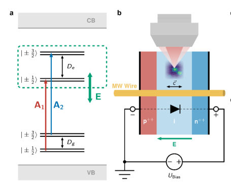
<figcaption class="paper-figure-caption"><b>Fig 1.</b> Fig. 1| Single VSi centers in industrial 4H SiC p-i-n diode structures and their electrical tuning.</figcaption>
</figure>
<figure class="paper-figure-card">
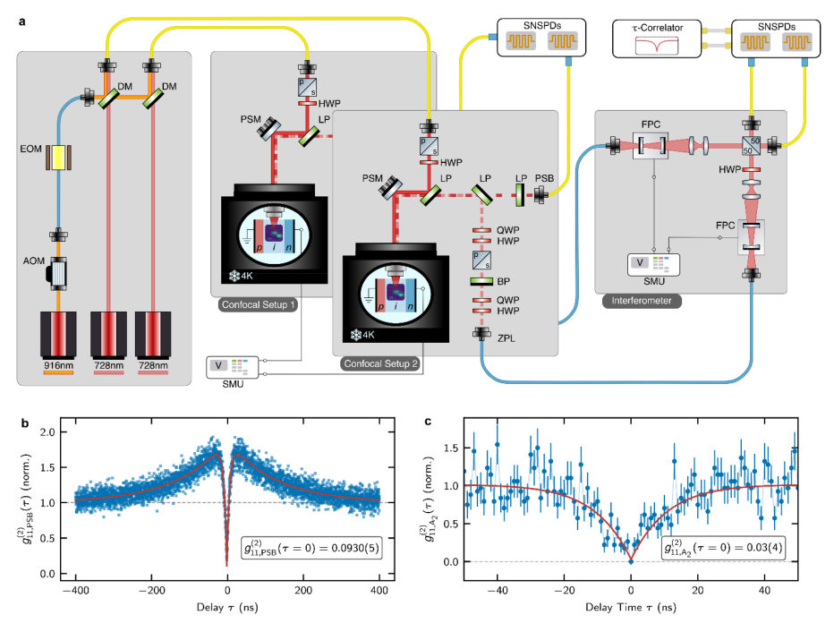
<figcaption class="paper-figure-caption"><b>Fig 2.</b> Fig. 2| Setup for two-photon interference between two spatially separated VSi centers and single photon</figcaption>
</figure>
<figure class="paper-figure-card">

<figcaption class="paper-figure-caption"><b>Fig 3.</b> Fig.3| Two-photon interference between remote VSi centers in two separate 4H-SiC samples.</figcaption>
</figure>
<figure class="paper-figure-card">

<figcaption class="paper-figure-caption"><b>Fig 4.</b> Fig.4| Long-term spectral stability of interfered VSi centers and distribution of deduced two-photon</figcaption>
</figure>
</div>

<p><strong>Summary.</strong> This paper demonstrates the feasibility of using silicon vacancy (V_Si) centers in industrial silicon carbide (SiC) as robust quantum network nodes. By electrically tuning and stabilizing the emission frequency, the researchers achieved high-visibility two-photon interference over a 26-day period between two spatially separated sources. These results establish V_Si in SiC as a scalable and stable building block for quantum communication.</p>
<p><strong>Why it may be interesting.</strong> This work provides a concrete, scalable solid-state implementation for quantum networking nodes, directly addressing the critical engineering hurdles of spectral stability and long-term coherence required for quantum repeaters.</p>
<details>
<summary>Detailed structure</summary>
<p><strong>Main problem.</strong> The core challenge is demonstrating high-visibility, long-term stable two-photon interference from spatially separated quantum nodes for use in distributed quantum networks.</p>
<p><strong>Main result.</strong> The authors successfully demonstrated two-photon interference with a raw visibility of 82% over a 26-day measurement campaign using VSi centers in industrial SiC devices.</p>
<p><strong>Method.</strong> The experiment utilized two-photon interference (HOM) measurements between two remote quantum emitters, combined with electrical biasing to achieve spectral tuning and stability.</p>
<p><strong>Model / system.</strong> The platform consists of silicon vacancy (V_Si) color centers embedded in industrial-grade silicon carbide (SiC) p-i-n diodes. These centers are electrically controlled via voltage biasing, allowing for spectral tuning and maintaining coherence over long periods.</p>
<p><strong>Key observables.</strong> Two-photon interference visibility (raw visibility of 82%), spectral linewidths (narrowed below 60 MHz), and long-term stability (requiring bias adjustment every 8.4 hours).</p>
<p><strong>Important parameters / regimes.</strong> Two-meter separation distance, 26-day measurement duration, and the achievable spectral narrowing limit (e.g., 29.62 MHz).</p>
<p><strong>Assumptions / limitations.</strong> The analysis relies on the assumption that the measured visibility is limited by the intrinsic properties of the VSi centers in the SiC matrix, which are shown to be scalable.</p>
<p><strong>Figures summary.</strong> Figures illustrate the setup with two samples in separate cryostats, the dependence of the A2 transition frequency on reverse bias, and the characterization of multiple VSi centers across different diodes.</p>
<p><strong>Paper structure.</strong> The paper progresses from establishing the physical platform (V_Si in SiC p-i-n diodes) to demonstrating spectral control (tuning and narrowing) and culminates in the long-term, high-visibility two-photon interference measurement between remote nodes.</p>
</details>
<details>
<summary>Abstract</summary>
<p>Distributed quantum networks rely on spatially separated, independently operated quantum systems as network nodes, whose emitted photons must be interfered with high visibility to establish end-to-end entanglement. Crucially, for network-relevant applications, high visibilities must be achieved over prolonged timescales to reduce overheads for error correction, and to increase network rates. Here, we demonstrate experimentally that silicon vacancy $\mathrm{V_{Si}}$ color centers in silicon carbide (SiC) achieve these requirements, notably in a mass-deployable fashion. We integrate $\mathrm{V_{Si}}$ centers in different industrial-grade SiC p-i-n diodes, which are controlled via voltage biassing. This way, we demonstrate both, spectral overlapping of 19 randomly selected $\mathrm{V_{Si}}$ centers in different diodes, as well as spectral narrowing close to the lifetime limit, i.e., typically below 60 MHz. Notably, these performance parameters are long-term stable, e.g., readjusting the p-i-n diode bias is required only every 8.4 hours, which reduces significantly the overall experimental overhead. We then use these assets to demonstrate high-quality two-photon interference between $\mathrm{V_{Si}}$ centers located in two different cryostat setups, which are spatially separated by two meters. Notably, we perform a 26-days long measurement campaign, demonstrating two-photon interference with state-of-the-art raw interference visibilities of 82%, which aligns with the current state-of-the-art. These results establish $\mathrm{V_{Si}}$ centers in industry-grade SiC devices as a scalable, spectrally stable building block for distributed quantum networks.</p>
</details>
<p><sub><a href="#top">↑ back to top</a></sub></p>

<p><a id="paper-2609.10100"></a></p>
<h3 id="in-situ-characterization-of-a-photon-subtraction-device-via-heralding-counts-and-homodyne-detection"><a href="http://arxiv.org/abs/2609.10100v1">In situ characterization of a photon-subtraction device via heralding counts and homodyne detection</a></h3>
<p><strong>Authors:</strong> Priyanka Sharma, Matteo G. A. Paris, Stefano Olivares<br>
<strong>Type:</strong> theory · <strong>Category:</strong> quantum information and computing · <strong>PDF:</strong> <a href="https://arxiv.org/pdf/2609.10100v1">https://arxiv.org/pdf/2609.10100v1</a><br>
<strong>Analysis basis:</strong> full PDF text, analyzed in chunks
<strong>Topic relevance:</strong> 🔥 <code>quantum measurements</code> <strong>4/5</strong> · <code>Full counting statistics</code> <strong>3/5</strong> · <code>quantum optics experiment</code> <strong>3/5</strong> · <code>Keldysh / 2PI / non-Gaussian methods</code> <strong>1/5</strong> · <code>interference shaping light</code> <strong>1/5</strong> · <code>methods for driven-dissipative</code> <strong>1/5</strong></p>
<div class="figure-strip-hint">↔ Scroll figures horizontally</div>
<div class="paper-figures-scroll">
<figure class="paper-figure-card">

<figcaption class="paper-figure-caption"><b>Fig 1.</b> FIG. 1. Sketch of the estimation setup. A displaced squeezed state (mode 1) is mixed with the vacuum state (mode</figcaption>
</figure>
<figure class="paper-figure-card">
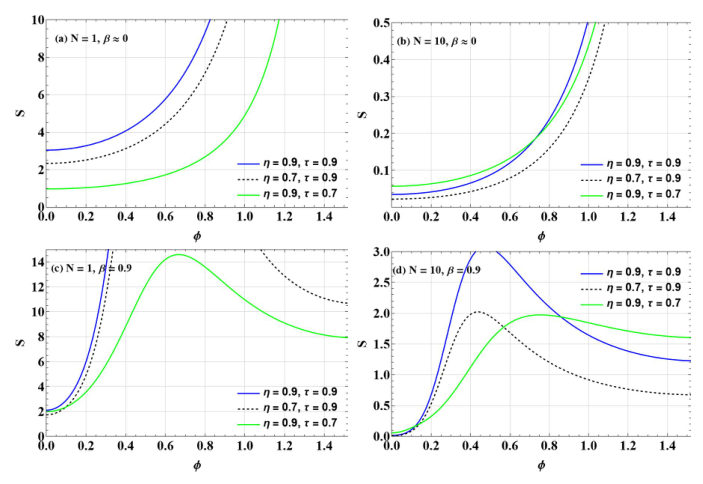
<figcaption class="paper-figure-caption"><b>Fig 2.</b> FIG. 2. Sloppiness S as a function of the homodyne phase ϕ ∈[0, π/2], for different values of τ and η. Panels (a)</figcaption>
</figure>
<figure class="paper-figure-card">

<figcaption class="paper-figure-caption"><b>Fig 3.</b> FIG. 3. Sloppiness S as a function of the input energy N for different values of τ and η with nearly no squeezing</figcaption>
</figure>
<figure class="paper-figure-card">
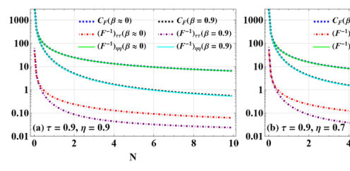
<figcaption class="paper-figure-caption"><b>Fig 4.</b> FIG. 4. Plots of CF ,  F−1</figcaption>
</figure>
<figure class="paper-figure-card">

<figcaption class="paper-figure-caption"><b>Fig 5.</b> Fig. 4 shows the dependence of CF ,  F−1</figcaption>
</figure>
</div>

<p><strong>Summary.</strong> This paper proposes a theoretical framework to simultaneously characterize the key parameters ($   au$ and $\eta$) of a photon-subtraction device using only its operational measurement data. By applying multi-parameter estimation theory, the authors demonstrate that joint estimation techniques outperform sequential methods for determining the device's quality. This has direct implications for improving the fidelity of non-Gaussian quantum states used in quantum information processing.</p>
<p><strong>Why it may be interesting.</strong> This work provides rigorous theoretical tools (Fisher information, sloppiness parameter) to quantify the practical limitations of characterizing quantum resources, which is crucial for designing and optimizing quantum optical experiments.</p>
<details>
<summary>Detailed structure</summary>
<p><strong>Main problem.</strong> The paper aims to develop an experimentally feasible, in situ method to simultaneously estimate the beam splitter transmissivity ($   au$) and the detector quantum efficiency ($\eta$) of a photon-subtraction device.</p>
<p><strong>Main result.</strong> Joint estimation strategies consistently provide a lower estimation bound than sequential estimation, and the use of squeezed states significantly reduces parameter degeneracy compared to coherent probes.</p>
<p><strong>Method.</strong> The analysis employs classical multi-parameter estimation theory, deriving and comparing the Fisher Information Matrix for joint versus sequential parameter estimation.</p>
<p><strong>Model / system.</strong> The system involves a photon-subtraction device where a displaced squeezed state interacts with a beam splitter ($  au$) and is measured by an on/off heralding detector ($\eta$) and a homodyne detector.</p>
<p><strong>Key observables.</strong> Click statistics of the heralding detector and continuous homodyne measurement outcomes ($x$).</p>
<p><strong>Important parameters / regimes.</strong> Beam splitter transmissivity ($ au$), detector quantum efficiency ($\eta$), squeezing fraction ($eta$), and mean photon number ($N$).</p>
<p><strong>Assumptions / limitations.</strong> The analysis assumes the conditional state for the 'off' event remains Gaussian, and the goal is an experimentally accessible estimation scheme.</p>
<p><strong>Figures summary.</strong> Figures illustrate the dependence of the sloppiness parameter ($S$) on homodyne phase ($\phi$), mean photon number ($N$), and squeezing fraction ($eta$), comparing joint versus sequential estimation bounds.</p>
<p><strong>Paper structure.</strong> The paper builds from establishing the physical setup and the need for in situ calibration, to deriving the Fisher information for both measurement outcomes, and finally comparing the theoretical bounds of joint versus sequential estimation strategies.</p>
</details>
<details>
<summary>Abstract</summary>
<p>Photon subtraction is one of the most important techniques for generating non-Gaussian optical states and constitutes a key resource for quantum information processing and quantum metrology. The practical performance of a photon-subtraction device is primarily determined by the transmissivity of the beam splitter and the quantum efficiency of the heralding detector. Accurate knowledge of these parameters is therefore essential for assessing the quality of the generated non-classical states. In this work, we propose an experimentally feasible in situ scheme for the simultaneous estimation of these two parameters using only the measurement data produced during the operation of the device. Our protocol combines the click statistics of an on/off heralding detector with homodyne measurements performed on the transmitted mode of the beam splitter when fed by a displaced squeezed state. Within the framework of classical multi-parameter estimation theory, we derive the corresponding Fisher information matrix and investigate both joint and sequential estimation strategies. For simultaneous measurement of parameters, we evaluate the sloppiness of the underlying statistical model and analyze its dependence on the measured quadrature, probe photon number, squeezing fraction, beam splitter transmissivity, and detector efficiency. Our analysis proves that an appropriate choice of the homodyne quadrature substantially reduces parameter degeneracy and enables efficient simultaneous estimation. Furthermore, we show that the joint estimation strategy consistently provides a lower estimation bound than the sequential estimation approach over a broad range of experimentally relevant parameters.</p>
</details>
<p><sub><a href="#top">↑ back to top</a></sub></p>

<p><a id="paper-2609.09305"></a></p>
<h3 id="transient-and-universal-regimes-in-quantum-reaction-transport-kinetics"><a href="http://arxiv.org/abs/2609.09305v1">Transient and universal regimes in quantum reaction-transport kinetics</a></h3>
<p><strong>Authors:</strong> Hossein Hosseinabadi, Roderich Moessner<br>
<strong>Type:</strong> theory · <strong>Category:</strong> statistical mechanics · <strong>PDF:</strong> <a href="https://arxiv.org/pdf/2609.09305v1">https://arxiv.org/pdf/2609.09305v1</a><br>
<strong>Analysis basis:</strong> full PDF text, analyzed in chunks
<strong>Topic relevance:</strong> 🔥 <code>Keldysh / 2PI / non-Gaussian methods</code> <strong>4/5</strong> · <code>non-equilibrium universality</code> <strong>3/5</strong> · <code>correlated / nonlocal dissipation</code> <strong>1/5</strong> · <code>driven-dissipative phase transition</code> <strong>1/5</strong> · <code>methods for driven-dissipative</code> <strong>1/5</strong> · <code>scars &amp; prethermalization</code> <strong>1/5</strong></p>
<div class="figure-strip-hint">↔ Scroll figures horizontally</div>
<div class="paper-figures-scroll">
<figure class="paper-figure-card">

<figcaption class="paper-figure-caption"><b>Fig 1.</b> FIG. 1. Schematic kinetic-regime diagram as a function of spatial dimension D and loss strength Γ/J. In D = 1, the asymptotic dynamics is transport-limited with n ∼t−1/2, although weak loss can produce a long transient reaction- limited regime. D = 2 is marginal, with n ∼(ln t)/t, while for D &gt; 2 the mean-field decay n ∼t−1 is asymptotically restored. At strong loss and D &gt; 1, emergent elastic collisions can rapidly redistribute particles and establish a quasi-stationary thermal state.</figcaption>
</figure>
<figure class="paper-figure-card">

<figcaption class="paper-figure-caption"><b>Fig 2.</b> FIG. 3. (a) Self-consistent diagrammatic equation for the T- matrix. (b) Boson self-energy in terms of the T-matrix.</figcaption>
</figure>
<figure class="paper-figure-card">

<figcaption class="paper-figure-caption"><b>Fig 3.</b> FIG. 4. (a) Time evolution of the momentum distribution normalized by the average density in one dimension for J = Γ. Higher-momentum modes decay more rapidly, causing the surviving population to concentrate near k = 0. (b) Density evolution for different hopping strengths. The asymptotic decay follows n ∼t−1/2 for all J/Γ, while for strong hopping a parametrically long transient mean-field regime n ∼t−1 can precede the asymptotic scaling.</figcaption>
</figure>
<figure class="paper-figure-card">
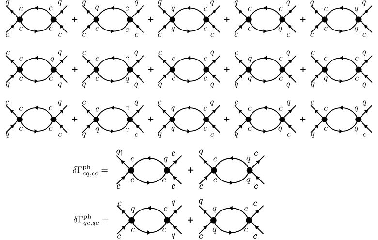
<figcaption class="paper-figure-caption"><b>Fig 4.</b> FIG. 1. Leading-order correction to the 2-particle vertex in the particle-hole channel. Each row separately vanishes in the vacuum.</figcaption>
</figure>
<figure class="paper-figure-card">

<figcaption class="paper-figure-caption"><b>Fig 5.</b> FIG. 2. Leading-order correction to the 2-particle vertex in the pairing channel.</figcaption>
</figure>
</div>

<p><strong>Summary.</strong> This work analyzes the long-time kinetics of quantum systems undergoing irreversible reactions, showing that the decay rate of particle density is highly sensitive to the spatial dimension D. The results reveal a dimensional crossover, where fluctuations dominate below D=2, leading to different power-law decays compared to the mean-field predictions for D&gt;2.</p>
<p><strong>Why it may be interesting.</strong> The dimensional crossover behavior ($D<2$ vs $D>2$) and the emergence of effective thermalization mechanisms from purely dissipative quantum processes are highly relevant to non-equilibrium statistical mechanics and open quantum systems.</p>
<details>
<summary>Detailed structure</summary>
<p><strong>Main problem.</strong> The paper investigates the universal long-time kinetic behavior of quantum reaction-transport systems, specifically determining how particle density decays in different spatial dimensions.</p>
<p><strong>Main result.</strong> The asymptotic decay rate of particle density depends critically on the spatial dimension D, showing $n \sim t^{-1/2}$ in 1D, logarithmic corrections in 2D, and mean-field $n \sim t^{-1}$ for $D>2$.</p>
<p><strong>Method.</strong> The analysis employs Keldysh field theory and kinetic theory, deriving equations of motion for momentum occupations by treating the system's evolution as a competition between reaction losses and elastic collisions.</p>
<p><strong>Model / system.</strong> The system models quantum reaction-transport kinetics using quantum binary annihilation ($A+A 	o \emptyset$) governed by a quantum master equation. The dynamics are analyzed via a kinetic equation for momentum occupations $n_k = \langle \psi_k^\dagger \psi_k 
angle$.</p>
<p><strong>Key observables.</strong> Particle density $n(t)$, temperature $T(t)$, momentum distribution width $Q(t)$, and the renormalized reaction vertex $T(k, p)$.</p>
<p><strong>Important parameters / regimes.</strong> Spatial dimension $D$, loss strength $\Gamma$, and the upper critical dimension $D_c=2$.</p>
<p><strong>Assumptions / limitations.</strong> The analysis relies on the T-matrix approximation for diagrammatic resummation and often involves retaining terms up to quadratic order in occupations.</p>
<p><strong>Figures summary.</strong> Figures illustrate the kinetic-regime diagram showing dependence on D and loss strength, and diagrammatic representations of the T-matrix derivation for pair annihilation.</p>
<p><strong>Paper structure.</strong> The paper progresses by establishing the general kinetic framework, deriving the kinetic equation for momentum occupations, and then analyzing the asymptotic limits separately for $D=1$, $D=2$, and $D>2$ to determine the universal scaling laws.</p>
</details>
<details>
<summary>Abstract</summary>
<p>Quantum reaction-transport systems consist of coherently propagating particles that irreversibly react upon encounter. Their relaxation is commonly classified as reaction-limited or transport-limited, depending on the relative timescales of reaction and particle transport. We show that this expectation fails in low dimensions by studying the quantum binary annihilation, $A+A \to \emptyset$, where reaction processes acquire singular fluctuation corrections below the upper critical dimension $D_c=2$. Consequently, fluctuations dominate the asymptotic kinetics for $D<2$. In one dimension, they render mean-field relaxation transient and drive the system toward a transport-limited regime with $n\sim t^{-1/2}$, governed by a quantum-Zeno scale even for arbitrarily weak loss. At $D=2$, the kinetics acquires logarithmic corrections, whereas above two dimensions mean-field scaling is asymptotically restored. At and below the upper critical dimension, mean-field behavior can nevertheless persist over parametrically long crossover times before the asymptotic fluctuation-dominated regime emerges. We also show that the same fluctuations generate effective elastic collisions despite the absence of microscopic coherent interactions. In $D>1$, these collisions redistribute momentum populations and are parametrically faster than losses in the transport-limited regime, allowing the system to approach a quasi-stationary thermal state.</p>
</details>
<p><sub><a href="#top">↑ back to top</a></sub></p>

<p><a id="paper-2609.09350"></a></p>
<h3 id="certified-measurement-and-control-of-an-entanglement-breaking-index-on-programmable-hardware"><a href="http://arxiv.org/abs/2609.09350v1">Certified measurement and control of an entanglement-breaking index on programmable hardware</a></h3>
<p><strong>Authors:</strong> Eran Kopel<br>
<strong>Type:</strong> both · <strong>Category:</strong> quantum information and computing · <strong>PDF:</strong> <a href="https://arxiv.org/pdf/2609.09350v1">https://arxiv.org/pdf/2609.09350v1</a><br>
<strong>Analysis basis:</strong> full PDF text, analyzed in chunks
<strong>Topic relevance:</strong> 🔥 <code>quantum measurements</code> <strong>4/5</strong> · <code>QC/QI experiment</code> <strong>3/5</strong> · <code>correlated / nonlocal dissipation</code> <strong>1/5</strong> · <code>driven-dissipative phase transition</code> <strong>1/5</strong> · <code>methods for driven-dissipative</code> <strong>1/5</strong></p>
<div class="figure-strip-hint">↔ Scroll figures horizontally</div>
<div class="paper-figures-scroll">
<figure class="paper-figure-card">
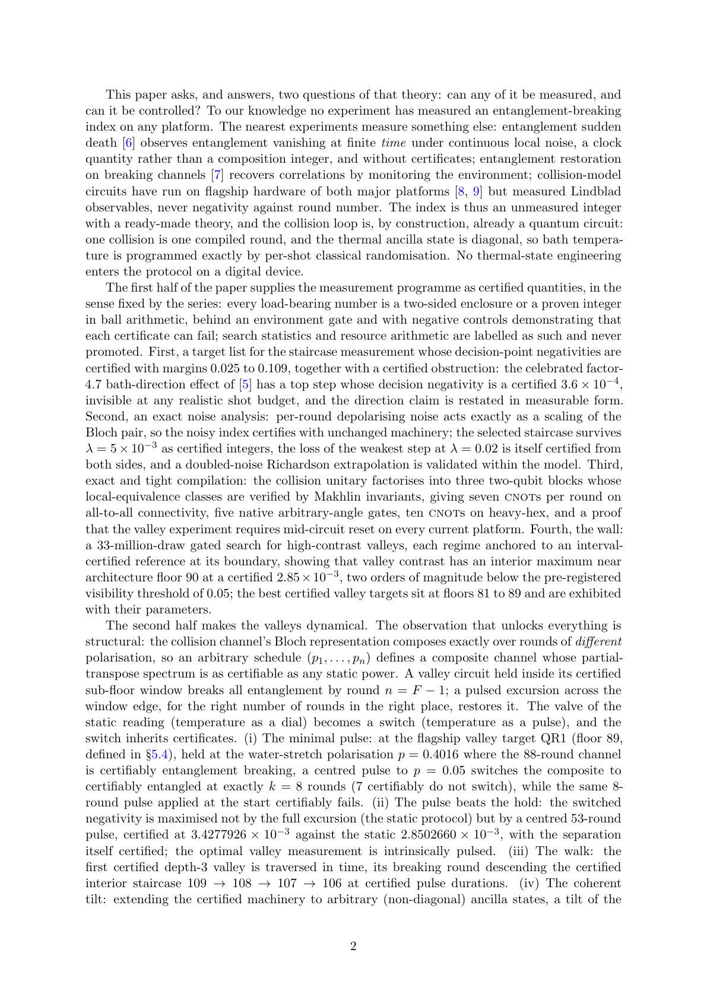
<figcaption class="paper-figure-caption"><b>Fig 1.</b> Low-resolution page preview, page 2</figcaption>
</figure>
<figure class="paper-figure-card">

<figcaption class="paper-figure-caption"><b>Fig 2.</b> Low-resolution page preview, page 3</figcaption>
</figure>
<figure class="paper-figure-card">
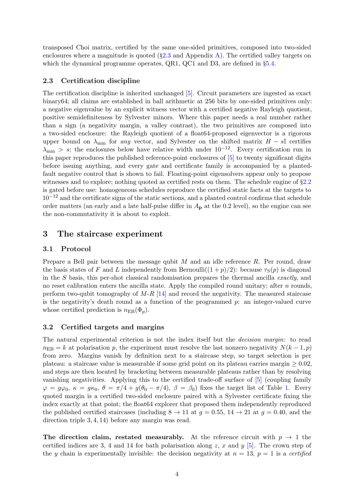
<figcaption class="paper-figure-caption"><b>Fig 3.</b> Low-resolution page preview, page 4</figcaption>
</figure>
<figure class="paper-figure-card">

<figcaption class="paper-figure-caption"><b>Fig 4.</b> Low-resolution page preview, page 5</figcaption>
</figure>
<figure class="paper-figure-card">
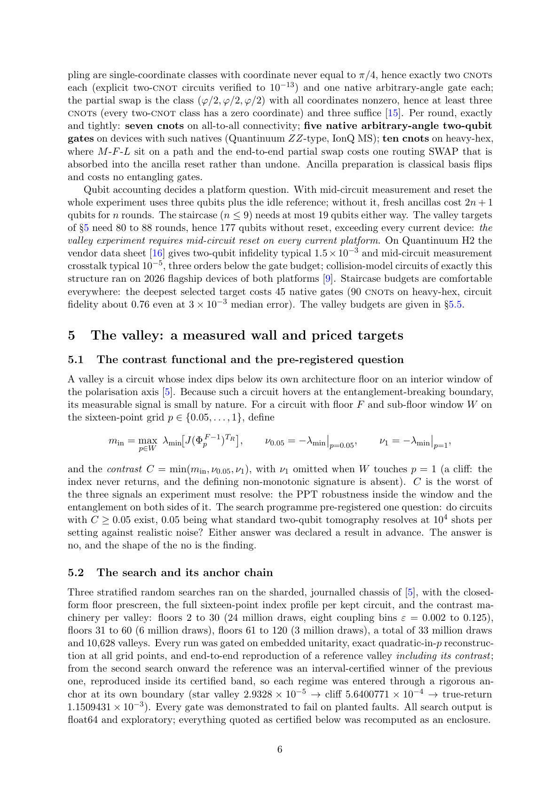
<figcaption class="paper-figure-caption"><b>Fig 5.</b> Low-resolution page preview, page 6</figcaption>
</figure>
</div>

<p><strong>Summary.</strong> This work provides a highly rigorous framework for measuring and controlling the entanglement-breaking index of a quantum channel on programmable hardware. By employing advanced interval arithmetic certificates, the authors prove that this index is measurable via a 'staircase' protocol and controllable using optimized pulsed operations. This advances the field by moving beyond mere simulation to certified, hardware-implementable quantum characterization.</p>
<p><strong>Why it may be interesting.</strong> The rigorous, certificate-based approach to characterizing channel properties like entanglement breaking is highly relevant to quantum information theory, providing new tools for benchmarking quantum hardware.</p>
<details>
<summary>Detailed structure</summary>
<p><strong>Main problem.</strong> The paper addresses the measurement and control of the entanglement-breaking index, $n_{EB}(\Phi)$, of a quantum channel, a quantity previously unmeasured.</p>
<p><strong>Main result.</strong> The authors demonstrate that $n_{EB}(\Phi)$ can be both rigorously measured and actively controlled on current programmable hardware using certified feedback loops and pulsed operations.</p>
<p><strong>Method.</strong> The methodology relies on advanced 'certification discipline' using ball arithmetic at 256 bits to provide rigorous, mathematically guaranteed bounds on physical observables.</p>
<p><strong>Model / system.</strong> The system models a quantum channel $\Phi$ acting on a message qubit, which interacts with fresh two-qubit thermal ancillas via a 'collision feedback loop.' The channel evolution is parameterized by bath polarization $p$.</p>
<p><strong>Key observables.</strong> The entanglement-breaking index $n_{EB}(\Phi)$ (an integer), negativity, and the contrast of the 'thermal valley' are key observables.</p>
<p><strong>Important parameters / regimes.</strong> The analysis involves noise strengths ($\lambda$), bath polarizations ($p$), and specific pulse lengths (e.g., minimal pulse of exactly eight rounds).</p>
<p><strong>Assumptions / limitations.</strong> The rigorous claims are based on the use of ball arithmetic and certified mathematical proofs; non-certified results (like the 33-million-draw search) are noted as such.</p>
<p><strong>Figures summary.</strong> The notes refer to a 'pulse atlas' detailing minimal switching pulse requirements and tables comparing signals achieved via coherent tilts versus static thermal protocols.</p>
<p><strong>Paper structure.</strong> The paper establishes the theoretical framework for the index, details the measurement program (staircase), and then develops the control mechanism, showing that pulsed operations outperform static ones, culminating in a comparison between thermal and coherent control.</p>
</details>
<details>
<summary>Abstract</summary>
<p>The entanglement-breaking index of a quantum channel, the number of self-compositions after which the channel destroys all entanglement with any reference, has to our knowledge never been measured. We show that a certified thermal collision feedback loop makes this integer both measurable and controllable on current programmable hardware, every load-bearing quantity delivered as an interval-arithmetic certificate. On the measurement side: a target list for the integer staircase n_EB(p) with decision-point negativities certified at margins 0.025 to 0.109; an exact per-round depolarising model in which the selected staircase survives realistic noise as certified integers; an exact, tight compilation of the round unitary (seven CNOTs all-to-all, five native arbitrary-angle gates, ten on heavy-hex); and a 33-million-draw gated search bounding the thermal valley's contrast by a wall with an interior maximum, a certified 2.85x10^-3 near floor 89. On the control side: the model composes rounds of differing bath polarisation exactly, so the valley becomes a pulsed valve, switching at a certified minimal pulse of exactly eight rounds; the optimal pulsed signal, a certified 3.43x10^-3, beats the static protocol, so the best valley measurement is intrinsically pulsed; and a coherent tilt of the bath Bloch vector lifts the signal to a certified 8.6x10^-3, three times the static ceiling, at zero population cost. Valley signatures certifiably die near per-round noise strength 10^-4, fixing the error-extrapolation burden. The staircase is a near-term experiment; the pulsed valley a precisely priced one.</p>
</details>
<p><sub><a href="#top">↑ back to top</a></sub></p>

<p><a id="paper-2609.09463"></a></p>
<h3 id="temperature-induced-effective-topology-in-many-body-ultracold-atomic-quantum-systems"><a href="http://arxiv.org/abs/2609.09463v1">Temperature-induced effective topology in many-body ultracold atomic quantum systems</a></h3>
<p><strong>Authors:</strong> Nitya Cuzzuol, Michele Miotto, Arianna Montorsi, Giacomo Valtolina, Luca Barbiero<br>
<strong>Type:</strong> both · <strong>Category:</strong> other · <strong>PDF:</strong> <a href="https://arxiv.org/pdf/2609.09463v1">https://arxiv.org/pdf/2609.09463v1</a><br>
<strong>Analysis basis:</strong> full PDF text, analyzed in chunks
<strong>Topic relevance:</strong> 🔥 <code>analog quantum simulation</code> <strong>4/5</strong> · <code>methods for driven-dissipative</code> <strong>3/5</strong> · <code>Frenkel-Kontorova</code> <strong>1/5</strong> · <code>driven-dissipative phase transition</code> <strong>1/5</strong></p>
<div class="figure-strip-hint">↔ Scroll figures horizontally</div>
<div class="paper-figures-scroll">
<figure class="paper-figure-card">

<figcaption class="paper-figure-caption"><b>Fig 1.</b> Figure 1. Schematic illustration of optical superlattice poten- tial for experimental realization of the dimerized model de- fined in Eq. (2), where bosons experience dimerized hopping amplitudes J ± δJ and nearest neighbor density-density in- teraction V .</figcaption>
</figure>
<figure class="paper-figure-card">
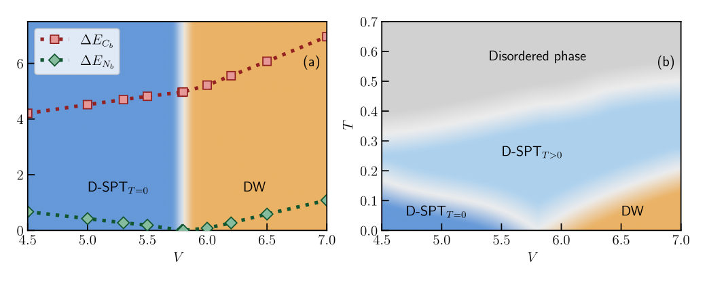
<figcaption class="paper-figure-caption"><b>Fig 2.</b> Figure 2. (a) Charge gap ∆ECb Eq. (4) (red) and neutral gap ∆ENb Eq. (5) (green) at T = 0 of the model HSSH Eq. (2) as a function of V for fixed δJ = 0.5. For values of V in the blue region, the model exhibits a D-SPTT =0 ground state, while in the orange region we observe a density wave phase. The neutral gap closes at V = 5.8 in correspondence to the phase transition between the D-SPTT =0 and the DW. The values of the energy gaps are obtained by fitting data from different chain lengths towards the thermodynamical limit. (b) Phase diagram of the same model at finite temperature. For low values of T, the two ground state phases extend to finite temperatures (D-SPTT =0 in the dark blue...</figcaption>
</figure>
<figure class="paper-figure-card">
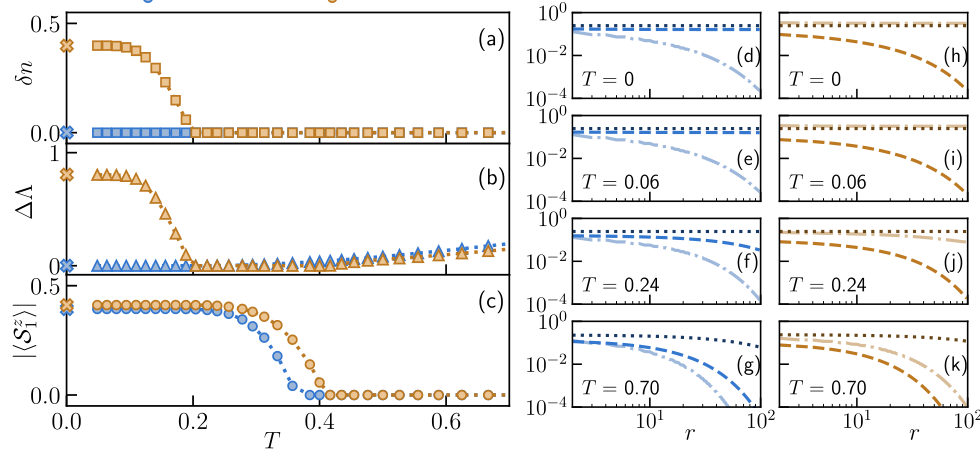
<figcaption class="paper-figure-caption"><b>Fig 3.</b> Figure 3. Left: Order parameters as a function of temperature for model Eq. (2) at V = 5.3 (blue) and V = 6.5 (orange). Crosses indicate the corresponding ground-state values at T = 0, obtained via DMRG. (a) Staggered magnetization Eq. (7) and (b) degeneracy order parameter Eq. (1) (extrapolated to large system sizes to minimize boundary effects on bulk quantities). (c) Local edge magnetization Eq. (3) extrapolated to zero field applied at the edges of a chain of length L = 300. Right: String correlation functions O(z) S,odd(r) (dotted dark lines) and O(x) S,odd(r) (dashed lines), and two-point correlation function CDW(r) (dash-dotted light lines), as a function of distance for different...</figcaption>
</figure>
<figure class="paper-figure-card">

<figcaption class="paper-figure-caption"><b>Fig 4.</b> Figure 4. Schematic illustration of the spin-1 model defined in Eq. (9) and of its constrained-boson representation in an optical-lattice potential. The spin model features a trans- verse spin-exchange coupling J and a longitudinal antifer- romagnetic interaction ∆. The local spin states |Sz i ⟩are mapped onto the bosonic occupation states |ni⟩according to |Sz i = +1⟩↔|ni = 0⟩, |Sz i = 0⟩↔|ni = 1⟩, and |Sz i = −1⟩↔|ni = 2⟩, as prescribed by the Holstein– Primakoff transformation [97].</figcaption>
</figure>
<figure class="paper-figure-card">
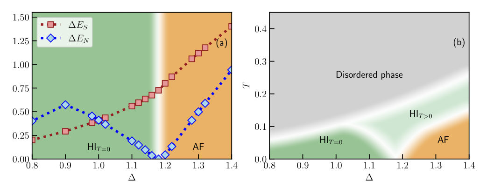
<figcaption class="paper-figure-caption"><b>Fig 5.</b> Figure 5. (a) Neutral gap ∆EN (blue) and spin gap ∆ES (red) at T = 0 for HXXZ as a function of ∆. For values of ∆ in the green region, the model exhibits the SPT phase HIT =0 in the ground state, while in the orange region we observe an antiferromagnetic phase. The neutral gap closes at ∆≃1.18 in correspondence to the phase transition between the HIT =0 and the AF. The values of the energy gaps are obtained by fitting data from different chain lengths towards the thermodynamical limit. (b) Phase diagram of the same model at finite temperature. For low values of T, the two ground state phases extend to finite temperatures (HIT =0 in the green region, AF in the orange one), while for large...</figcaption>
</figure>
</div>

<p><strong>Summary.</strong> This paper demonstrates that temperature can act as a tunable resource to engineer effective topological phases in ultracold atomic quantum simulators. By analyzing gap structures in models like the SSH chain, the authors show that intermediate temperatures can stabilize topological correlations that are absent or different from the zero-temperature ground state. This opens a new experimental avenue for realizing and studying topological matter.</p>
<p><strong>Why it may be interesting.</strong> This is highly relevant for AMO physicists as it provides a concrete, experimentally accessible mechanism (temperature control) to tune and explore exotic quantum phases in ultracold atomic setups.</p>
<details>
<summary>Detailed structure</summary>
<p><strong>Main problem.</strong> The study investigates whether temperature itself can serve as a resource to engineer effective topological quantum phases in many-body systems that do not exist at absolute zero temperature.</p>
<p><strong>Main result.</strong> The research establishes a novel mechanism where finite-temperature thermal fluctuations can drive systems into effective topological regimes, distinct from their zero-temperature ground states.</p>
<p><strong>Method.</strong> The analysis employs finite-temperature matrix-product-state (MPS) calculations, comparing results with zero-temperature DMRG calculations to track topological markers.</p>
<p><strong>Model / system.</strong> The work focuses on ultracold atomic quantum systems, modeling interacting bosonic Su-Schrieffer-Heeger (SSH) chains, spin-1 XXZ chains, and fermionic dipolar ladder models.</p>
<p><strong>Key observables.</strong> Long-range order (LRO) of non-local string correlation functions (SCFs), entanglement spectrum (ES), and the gap structure defined by different excitation gaps.</p>
<p><strong>Important parameters / regimes.</strong> Temperature (T), interaction strengths (V, $\delta J$), and the specific gap magnitudes ($\Delta E_{Cb}, \Delta E_{Nb}$).</p>
<p><strong>Assumptions / limitations.</strong> The analysis relies on finite-size systems and the applicability of MPS methods to the thermal state purification.</p>
<p><strong>Figures summary.</strong> Figure 1 schematically illustrates the optical superlattice potential used for the dimerized model.</p>
<p><strong>Paper structure.</strong> The paper progresses by first establishing the $T=0$ topological phases in specific models, then introducing finite-temperature calculations to observe how thermal fluctuations modify or induce new effective topological behaviors by selectively suppressing certain excitation gaps.</p>
</details>
<details>
<summary>Abstract</summary>
<p>Ultracold atomic quantum systems offer an unprecedentedly powerful platform for exploring interacting symmetry-protected topological phases. Here, we show that their characteristic control over temperature provides a resource for engineering effective topological regimes with no zero-temperature counterpart. Employing finite-temperature matrix-product-state calculations, we investigate experimentally accessible Hamiltonians - the interacting bosonic Su-Schrieffer-Heeger and spin-1 XXZ chains - that host a topological phase at zero temperature, as well as a fermionic dipolar ladder model whose ground state exhibits no topological order. By tracking complementary topological markers, we identify an intriguing mechanism rooted in the structure of the zero-temperature phase diagrams: in finite-size systems, excitation gaps with different magnitudes define an intermediate-temperature window where the correlations associated with the lower gap are suppressed, while those protected by the larger gap persist. This enables the emergence of effective finite-temperature regimes exhibiting topological features that are either absent or qualitatively different from those at zero temperature. Our results establish a novel route toward exploring effective topological phases in ultracold atomic quantum systems.</p>
</details>
<p><sub><a href="#top">↑ back to top</a></sub></p>

<p><a id="paper-2609.10079"></a></p>
<h3 id="loss-correcting-fault-tolerant-quantum-computing-architecture-for-neutral-atoms"><a href="http://arxiv.org/abs/2609.10079v1">Loss-correcting fault-tolerant quantum computing architecture for neutral atoms</a></h3>
<p><strong>Authors:</strong> Sanaa Sharma, Yutaka Hirano, Akihisa Goban, Hayata Yamasaki, Shinichi Sunami, Prakash Murali<br>
<strong>Type:</strong> theory · <strong>Category:</strong> quantum information and computing · <strong>PDF:</strong> <a href="https://arxiv.org/pdf/2609.10079v1">https://arxiv.org/pdf/2609.10079v1</a><br>
<strong>Analysis basis:</strong> full PDF text, analyzed in chunks
<strong>Topic relevance:</strong> 🔥 <code>QC/QI experiment</code> <strong>4/5</strong> · <code>Rydberg arrays</code> <strong>1/5</strong> · <code>analog quantum simulation</code> <strong>1/5</strong> · <code>quantum measurements</code> <strong>1/5</strong></p>
<div class="figure-strip-hint">↔ Scroll figures horizontally</div>
<div class="paper-figures-scroll">
<figure class="paper-figure-card">

<figcaption class="paper-figure-caption"><b>Fig 1.</b> Fig. 1: a) Loss-aware layout: all logical operations happen inside the compute zone, where logical qubits are shuttled across other qubits for transversal CXs/ T-state routing. Ancilla qubits are measured in readout zone, and reused following a reinitialization in storage zone. b) Loss-aware layout modeling and compilation framework. Starred boxes: this work’s contribution.</figcaption>
</figure>
<figure class="paper-figure-card">

<figcaption class="paper-figure-caption"><b>Fig 2.</b> Fig. 2: Atom loss mechanisms and state-selective readout.</figcaption>
</figure>
<figure class="paper-figure-card">

<figcaption class="paper-figure-caption"><b>Fig 3.</b> Fig. 4: a) Transfer loss is a major source of loss because of recurrent movement between AOD-SLM traps. b) In zoned layout, transfer loss for each qubit is counted 4× per gate.</figcaption>
</figure>
<figure class="paper-figure-card">

<figcaption class="paper-figure-caption"><b>Fig 4.</b> Fig. 3: a) Current zoned architecture layout: entangling op- erations take place in a separate zone, increasing the routing overhead. b) Shuttling time scales with circuit depth.</figcaption>
</figure>
<figure class="paper-figure-card">
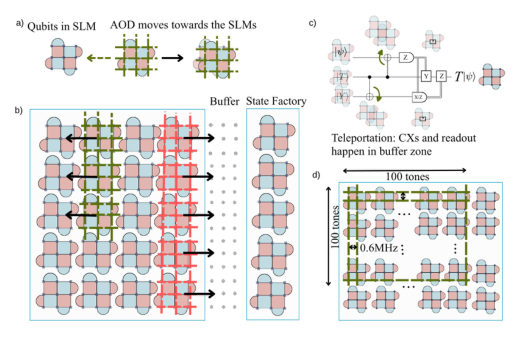
<figcaption class="paper-figure-caption"><b>Fig 5.</b> Fig. 5: a) Transversal gate implementation in compute zone. b) Two movements facilitated by AODs in compute zone: Transversal gates (green crossed AODs) and T-state routing to buffer zone (red crossed AODs). c) S and T Gate teleportation takes place in buffer zone. d) Maximum number of RF tones enable parallel gate movements by an AOD.</figcaption>
</figure>
</div>

<p><strong>Summary.</strong> This paper presents a novel, loss-aware framework for fault-tolerant quantum computing using neutral atoms. It addresses the critical failure point of qubit loss by co-designing the quantum circuit compilation, physical layout, and error decoding. The resulting architecture significantly boosts performance by minimizing costly atom shuttling and controlling the total loss budget across the computation.</p>
<p><strong>Why it may be interesting.</strong> This work is highly relevant as it bridges the gap between theoretical quantum error correction codes and the practical, loss-dominated physical realities of neutral-atom hardware, providing actionable architectural guidelines.</p>
<details>
<summary>Detailed structure</summary>
<p><strong>Main problem.</strong> The primary challenge is developing a fault-tolerant quantum computing architecture for neutral atoms that can effectively model and mitigate qubit loss, which is a dominant error source ignored by standard error correction and compilation methods.</p>
<p><strong>Main result.</strong> The proposed loss-aware framework improves accumulated loss per syndrome-extraction round by up to 2.15X and reduces logical error rates by over two orders of magnitude compared to existing zoned architectures.</p>
<p><strong>Method.</strong> The authors developed a comprehensive, end-to-end loss-aware pipeline that jointly optimizes the physical layout, the compiler's routing decisions, and the decoding process to account for dynamic loss budgets.</p>
<p><strong>Model / system.</strong> The work focuses on neutral-atom arrays used for quantum computation, employing the surface code for error correction. The architecture is designed to operate within a compact 'compute zone' to minimize loss associated with long-distance shuttling between separate storage and entangling zones.</p>
<p><strong>Key observables.</strong> Accumulated loss per syndrome-extraction round, logical error rates (LER), CX routing time, and required atom reloading rates.</p>
<p><strong>Important parameters / regimes.</strong> Loss budget, code distance ($d$), AOD bandwidth constraints, and the motional excitation budget ($\Delta n$).</p>
<p><strong>Assumptions / limitations.</strong> The framework assumes that loss can be treated as a dynamic, controllable budget rather than a fixed error parameter, and it provides concrete device targets for hardware scaling.</p>
<p><strong>Figures summary.</strong> Figures illustrate the loss-aware layout, comparing it to zoned architectures, and show the trade-off between transport speed and accumulated loss per syndrome-extraction round.</p>
<p><strong>Paper structure.</strong> The paper first establishes the limitations of existing loss-agnostic FTQC models, then proposes the loss-aware transversal-gate architecture, details the loss-aware compiler optimizations, and finally validates the approach by showing significant improvements in loss and logical error rates.</p>
</details>
<details>
<summary>Abstract</summary>
<p>Neutral-atom arrays are a leading qubit technology for large-scale, fault-tolerant quantum computing (FTQC). A dominant error source on this platform is qubit loss, which accrues with every operation and movement. The presence of loss undermines the promises of existing architectural work. Standard error correction targets stochastic Pauli errors and cannot correct loss, so most FTQC performance analyses are not directly compatible with it. Moreover, compilation and routing decisions, which strongly affect overall loss, are typically optimized against Pauli-error cost models and often remain loss-agnostic, potentially increasing exposure to the loss channel.   In this work, we comprehensively model the effect of qubit loss on neutral-atom FTQC and develop a loss-tolerant transversal-gate architecture. We treat loss not as a predetermined error parameter but as a dynamic budget spent across a whole program, allowing us to control it by co-designing layout, compilation, and decoding. We target a physical implementation with no separate storage and entangling zones, eliminating the repeated SLM-AOD handoffs and long-distance shuttling that dominate loss in other layouts. We develop compiler optimizations that maximize gate parallelism while respecting the RF tone budget and AOD bandwidth constraints. Our work couples these with a loss-aware, delayed-erasure decoder and an end-to-end loss-aware magic state cultivation protocol. Overall, we improve accumulated loss per syndrome-extraction round by up to 2.15X against a zoned baseline and reduce logical error rates by over two orders of magnitude versus current architectures. Our framework also informs concrete device targets such as continuous reloading rates, AOD counts, and shuttling trajectory choices. We expect these insights to matter for system architects as neutral-atom hardware scales.</p>
</details>
<p><sub><a href="#top">↑ back to top</a></sub></p>

<p><a id="paper-2609.09663"></a></p>
<h3 id="realization-theory-for-quantum-filtering-classifying-continuously-monitored-bosonic-systems"><a href="http://arxiv.org/abs/2609.09663v1">Realization Theory for Quantum Filtering: Classifying Continuously Monitored Bosonic Systems</a></h3>
<p><strong>Authors:</strong> Jacob Emerson<br>
<strong>Type:</strong> theory · <strong>Category:</strong> other · <strong>PDF:</strong> <a href="https://arxiv.org/pdf/2609.09663v1">https://arxiv.org/pdf/2609.09663v1</a><br>
<strong>Analysis basis:</strong> full PDF text, analyzed in chunks
<strong>Topic relevance:</strong> 🔥 <code>quantum measurements</code> <strong>4/5</strong> · <code>correlated / nonlocal dissipation</code> <strong>1/5</strong> · <code>driven-dissipative phase transition</code> <strong>1/5</strong> · <code>methods for driven-dissipative</code> <strong>1/5</strong></p>
<div class="figure-strip-hint">↔ Scroll figures horizontally</div>
<div class="paper-figures-scroll">
<figure class="paper-figure-card">
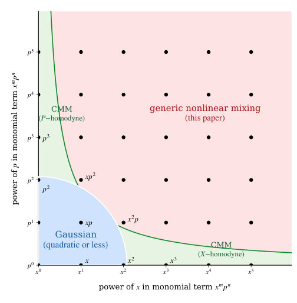
<figcaption class="paper-figure-caption"><b>Fig 1.</b> FIG. 1. Single-mode schematic of the finite-rank and infinite- rank Hamiltonian sectors. Each lattice point (ℓ, k) repre- sents a Weyl-ordered monomial Sym(XℓP k) appearing in the Hamiltonian. The finite sectors shown are the Gaussian class and the CMM classes aligned with X- and P-homodyne mon- itoring. Monomials outside these sectors mix the measured and conjugate quadratures in a way that produces infinite observable Hankel rank in the classification theorem.</figcaption>
</figure>
<figure class="paper-figure-card">
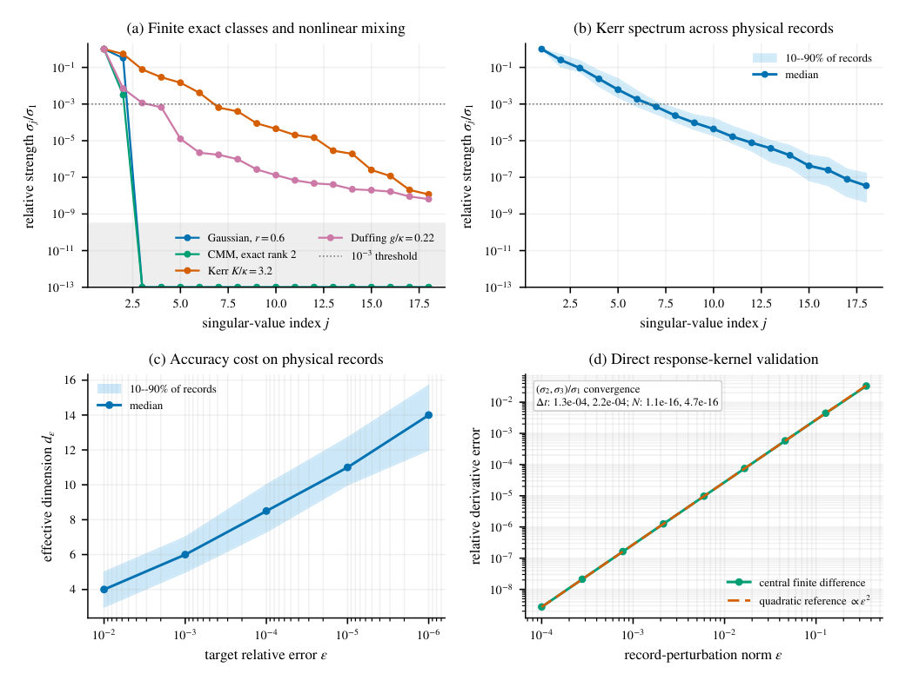
<figcaption class="paper-figure-caption"><b>Fig 2.</b> FIG. 2. Exact and effective observable memory on physical records. (a) Relative singular spectra for two finite exact controls and two nonlinear mixing systems. The Gaussian and CMM responses terminate after two directions, whereas Kerr and Duffing retain decaying tails. (b) Median and 10th–90th percentile Kerr spectra over 24 physical homodyne records. (c) The corresponding effective dimension dϵ. (d) Direct central-finite-difference validation of the discrete response kernel. All panels use ideal monitoring and separated past and future windows. Exact zeros of the analytic CMM kernel are shown at the plotting floor.</figcaption>
</figure>
<figure class="paper-figure-card">
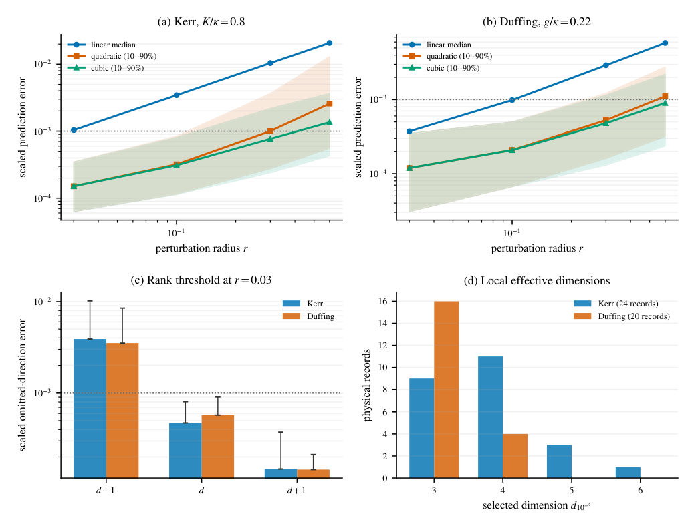
<figcaption class="paper-figure-caption"><b>Fig 3.</b> FIG. 3. Finite prediction in the Hankel-selected coordinates. Median scaled trajectory error E(r) versus L2 record-perturbation radius r for (a) Kerr and (b) Duffing physical records. The quadratic and cubic curves use the same d = d10−3 coordinates as the linear response; their shading spans the 10th–90th percentiles, while the linear curve is a median-only baseline. (c) Response along the first omitted direction when d −1, d, or d + 1 directions are retained at r = 0.03; upper error bars reach the 90th percentile. (d) Empirical counts of the independently selected local dimensions over 24 Kerr and 20 Duffing records. The dotted line marks the target error 10−3.</figcaption>
</figure>
<figure class="paper-figure-card">

<figcaption class="paper-figure-caption"><b>Fig 4.</b> FIG. 4. Poisson–Charlier approximation of monitored Kerr dynamics. (a) Phase-aligned endpoint state error over 40 physical heterodyne Kerr records. (b) Real variables required by the Charlier response and by the optimal rank-d response approximation on the same record. (c) Accuracy-matched Fock and Charlier state dimensions at fixed accumulated mean-field phase. (d) Their separately measured online times for a batch of 128 trajectories, with reusable operator construction excluded. Panels (c) and (d) use a common 90th-percentile state tolerance of 10−6.</figcaption>
</figure>
<figure class="paper-figure-card">
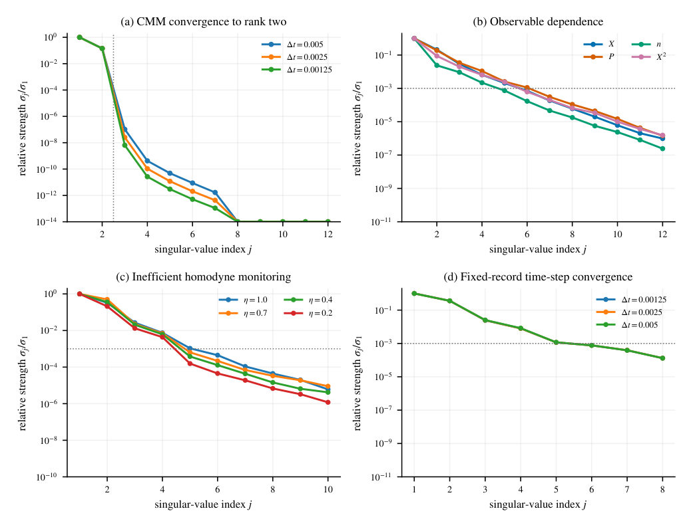
<figcaption class="paper-figure-caption"><b>Fig 5.</b> FIG. 5. Additional checks of the observable-response spectrum. (a) For the cubic CMM control, the first two singular values remain finite while the apparent third decreases by approximately four under each time-step halving, as expected for an exact rank-two response computed with a second-order step. (b) Median Kerr spectra for the future observables X, P, N, and X2</figcaption>
</figure>
</div>

<p><strong>Summary.</strong> This paper develops a realization theory framework to classify continuously monitored bosonic systems based on whether they admit an exact, finite-dimensional quantum filter. By analyzing the rank of the linearized observable Hankel operator, the authors rigorously distinguish between simple, integrable systems (like Gaussian dynamics) and complex nonlinear systems that require infinite internal degrees of freedom for perfect description. This work sets a fundamental benchmark for quantum measurement theory.</p>
<p><strong>Why it may be interesting.</strong> This work provides a rigorous, mathematically defined boundary for when quantum feedback control can be modeled by finite-dimensional systems, which is crucial for designing practical quantum measurement and control protocols.</p>
<details>
<summary>Detailed structure</summary>
<p><strong>Main problem.</strong> The paper addresses the fundamental question of determining whether a continuously monitored quantum system admits an exact, finite-dimensional description (filter) based on its measurement record.</p>
<p><strong>Main result.</strong> The authors establish a criterion using the linearized observable Hankel operator ($\mathcal{K}_O$): Gaussian dynamics and the Conditional Momentum Moment class admit exact finite filters, while most nonlinear dynamics lead to infinite response rank.</p>
<p><strong>Method.</strong> The analysis reformulates quantum filtering as a realization problem, employing the Hankel operator to map past measurement record changes to future observable changes, drawing parallels with classical input-output realization theory.</p>
<p><strong>Model / system.</strong> The system under study is a continuously monitored bosonic system, whose dynamics are governed by a stochastic master equation derived from a polynomial Hamiltonian $h(x, p)$.</p>
<p><strong>Key observables.</strong> The linearized observable Hankel operator ($\mathcal{K}_O$), the singular values of $\mathcal{K}_O$, and the conditional expectation values $\langle O 
angle_t$.</p>
<p><strong>Important parameters / regimes.</strong> Measurement efficiency ($\eta$), damping ($\kappa$), and the polynomial structure of the Hamiltonian $h(x, p)$.</p>
<p><strong>Assumptions / limitations.</strong> The framework is based on analyzing the observable-level response, which provides a coordinate-independent lower bound on the required internal variables.</p>
<p><strong>Figures summary.</strong> Figures provide quantitative evidence showing the convergence and stability of calculated spectra (Kerr spectra) under varying simulation parameters like time steps ($\Delta t$) and measurement efficiencies ($\eta$).</p>
<p><strong>Paper structure.</strong> The paper builds from formulating the problem as a realization theory question, defining the Hankel operator, classifying the finite sectors ($\mathcal{G}$ and $\mathcal{C}X$) using rank analysis, and concluding with numerical verification on specific oscillators.</p>
</details>
<details>
<summary>Abstract</summary>
<p>Exact finite-dimensional descriptions exist for a few important classes of continuously monitored quantum systems, but there is no general criterion separating systems that admit such filters from those that do not. We formulate this question as a realization problem and introduce the linearized observable Hankel operator $K_O$, which maps changes in the past measurement record to changes in a future conditional observable. For polynomial bosonic systems under continuous quadrature monitoring, this gives a sharp boundary between finite and infinite realizability. Gaussian dynamics and the Conditional Momentum Moment class admit exact finite-dimensional filters, while nonlinear dynamics outside these classes generically produce infinitely many independent response directions and admit no robust finite-dimensional $C^1$ observable- or state-level filter. The singular values of $K_O$ then extend the same realization framework to approximation, giving the optimal rank-$d$ local-response error beyond the finite classes. Numerical experiments with the Kerr and Duffing oscillators, together with a dynamics-adapted Poisson--Charlier construction for Kerr dynamics, show how this observable-level benchmark interacts with concrete reduced representations. Together, these results identify the boundary of exact quantum filtering and quantify finite-dimensional approximation beyond it.</p>
</details>
<p><sub><a href="#top">↑ back to top</a></sub></p>

<p><a id="paper-2609.09495"></a></p>
<h3 id="certifying-bipartite-entanglement-on-a-superconducting-processor-from-a-corrected-qaoa-cost-layer"><a href="http://arxiv.org/abs/2609.09495v1">Certifying bipartite entanglement on a superconducting processor from a corrected QAOA cost layer</a></h3>
<p><strong>Authors:</strong> Carlos-Miguel Lorenzo<br>
<strong>Type:</strong> experiment · <strong>Category:</strong> quantum information and computing · <strong>PDF:</strong> <a href="https://arxiv.org/pdf/2609.09495v1">https://arxiv.org/pdf/2609.09495v1</a><br>
<strong>Analysis basis:</strong> full PDF text, analyzed in chunks
<strong>Topic relevance:</strong> 🔥 <code>QC/QI experiment</code> <strong>4/5</strong> · <code>quantum measurements</code> <strong>1/5</strong></p>
<div class="figure-strip-hint">↔ Scroll figures horizontally</div>
<div class="paper-figures-scroll">
<figure class="paper-figure-card">

<figcaption class="paper-figure-caption"><b>Fig 1.</b> Figure 1: Entanglement is certified on the good coupler at depth one and nowhere else. (a) Per-arm two-qubit reduced-state negativity from tomography, day-level mean with 95% confidence interval over six calibrations: the good edge 4-5 at p = 1 certifies (cold and warm), while the p = 3 arm, the coupling-off J = 0 twin and the degraded 6-8 edge are separable. (b) The independent randomized-measurement p3-PPT witness W = p2 2 −p3 on the good edge on a later calibration: W = 0.0105 with BCa 95% CI, clear of the Werner PPT-boundary null but — at this magnitude — underpowered against a near-pure-separable null, so reported as consistent with entanglement.</figcaption>
</figure>
<figure class="paper-figure-card">
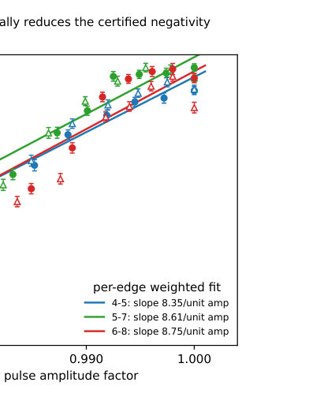
<figcaption class="paper-figure-caption"><b>Fig 2.</b> Figure 2: Reducing the manipulated CZ drive amplitude reduces the certified negativity along a positive, well-fit slope over the probed ladder. Certified two-qubit negativity (PSD, BCa) against the manipulated CZ pulse amplitude factor (the single knob we set), for three couplers of component B (4-5, 5-7, 6-8), two calibration sessions each (filled circles, session 1; open triangles, session 2). Lines are the per-edge weighted fits over the rung window; the legend gives the per-edge slope in certified negativity per unit fractional amplitude. The fits are local linearisations: the drive-to-phase map overshoots π at the nominal amplitude and the certified negativity peaks at |ζ| = π, so the...</figcaption>
</figure>
<figure class="paper-figure-card">
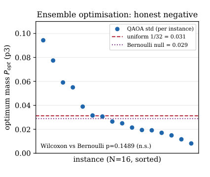
<figcaption class="paper-figure-caption"><b>Fig 3.</b> Figure 3: The certificate collapses by depth three on b08; separately, the depth-three ensemble shows no optimisation signal. Left: the good-edge negativity present at p = 1 is separable by p = 3 (instance b08, day- level over six calibrations) — a within-instance depth collapse. Right: across the N = 16 ensemble measured at p = 3 only, per-instance optimum mass Popt sits at the uniform (1/32) and device-marginal Bernoulli floors (one-sided Wilcoxon versus Bernoulli p = 0.15, not significant); this speaks to p = 3 alone and is not evidence of a decline with depth.</figcaption>
</figure>
<figure class="paper-figure-card">
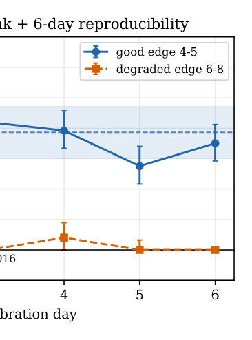
<figcaption class="paper-figure-caption"><b>Fig 4.</b> Figure 4: The good coupler certifies on every calibration; the degraded coupler never does. Raw two-qubit negativity of the good edge 4-5 (upper) and the degraded edge 6-8 (lower) across the six daily calibrations, with the good-edge grand-mean band. Good above bad on 6/6 days; the separation is reported through the two per-edge day-level intervals (good BCa CI [0.065, 0.091], degraded TOST-equivalent to zero), because the pre-registered paired test is a secondary hypothesis that does not survive multiplicity correction (see text). Between-day standard deviation 0.016.</figcaption>
</figure>
<figure class="paper-figure-card">
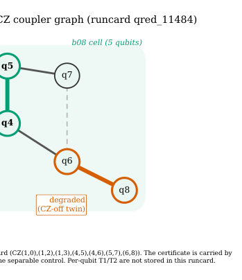
<figcaption class="paper-figure-caption"><b>Fig 5.</b> Figure 5: Component B of Red and its couplers. The calibrated connectivity read live from the runcard on 4 August 2026: nine qubits, seven CZ couplers, and the absent 3-4 bridge that splits the chip into components A = {0, 1, 2, 3} and B = {4, 5, 6, 7, 8}. Component B carries the primary instance b08, the good edge 4-5, the degraded edge 6-8 and the 5-7 coupler used in the causal experiment.</figcaption>
</figure>
</div>

<p><strong>Summary.</strong> This paper rigorously certifies bipartite entanglement on a superconducting processor using the QAOA cost layer. The key achievement is demonstrating a measurable, causal relationship: deliberately reducing the CZ pulse amplitude predictably reduces the certified entanglement. This provides a deep, physics-grounded characterization of device performance rather than just algorithmic success.</p>
<p><strong>Why it may be interesting.</strong> This work provides a highly detailed, quantitative characterization of entanglement generation on a real superconducting chip, moving beyond simple 'yes/no' demonstrations to map out the physical control landscape of quantum resources.</p>
<details>
<summary>Detailed structure</summary>
<p><strong>Main problem.</strong> To move beyond simply reporting success against a random floor in hardware demonstrations of algorithms like QAOA, by rigorously certifying the physical entanglement generated by the device.</p>
<p><strong>Main result.</strong> Bipartite entanglement was certified on the good coupler at depth one, and a causal dose-response law was established showing that reducing the CZ pulse amplitude causally reduces the certified negativity.</p>
<p><strong>Method.</strong> The study used two-qubit tomographic negativity to certify entanglement and performed pre-registered manipulations varying the CZ pulse amplitude to establish a causal relationship with the measured entanglement.</p>
<p><strong>Model / system.</strong> The experiment was conducted on a nine-qubit superconducting processor named "Red" at the Barcelona Supercomputing Center, focusing on the corrected QAOA cost layer implemented on a five-qubit component.</p>
<p><strong>Key observables.</strong> Two-qubit tomographic negativity, CZ pulse amplitude, average gate fidelity, and the depth of the QAOA circuit.</p>
<p><strong>Important parameters / regimes.</strong> Depth one (for entanglement certification), the CZ pulse amplitude (the control variable), and the resulting linear fit slope ($R^2 = 0.83-0.96$).</p>
<p><strong>Assumptions / limitations.</strong> The analysis relies on pre-registration for rigor; the authors explicitly claim no quantum advantage as the tested instances are classically solvable.</p>
<p><strong>Figures summary.</strong> Figures illustrate the connectivity of the superconducting processor, the reconstructed two-qubit density matrix showing coherences, and tables present the statistically derived dose-response slopes for certified negativity versus manipulated CZ pulse amplitude.</p>
<p><strong>Paper structure.</strong> The paper establishes the physical system and the goal of rigorous entanglement certification. It presents the entanglement measurements, followed by the core experimental work: varying the CZ pulse amplitude to map out a causal, measurable relationship between device control and quantum resource (negativity). Finally, it discusses the limitations, depth collapse, and statistical robustness of the findings.</p>
</details>
<details>
<summary>Abstract</summary>
<p>The Quantum Approximate Optimisation Algorithm is the canonical near-term heuristic, yet on real superconducting hardware its behaviour is set by device physics, not by the algorithm. Hardware demonstrations rarely prove the intended coupling is realised, that genuine entanglement is prepared, or what controls it. We report a pre-registered single-device study on the nine-qubit superconducting processor Red at the Barcelona Supercomputing Center, using its five-qubit component. Across six calibrations we certify bipartite entanglement of a corrected QAOA cost layer on the good coupler at depth one by two-qubit tomographic negativity: 0.077, BCa 95% CI [0.065, 0.091], excluding zero every day, while the coupling-off twin stays separable and the degraded coupler equals zero. We then measure the device physics directly: in a pre-registered manipulation on a fixed Bell preparation (not the QAOA layer), reducing the CZ pulse amplitude causally reduces the certified negativity along a positive, well-fit slope (R^2 = 0.83-0.96), every rung-level interval excluding zero and surviving Holm and Benjamini-Hochberg correction. This is a local linearisation of a peaked response, not a global monotone law: the negativity peaks at conditional phase |zeta| = pi, which the nominal amplitude overshoots. The J=0 twin is a separate off-state control and the fringe visibility is constant, so the effect is coherent. The average gate fidelity is non-monotone in the drive and is reported only as a diagnostic. A per-circuit statevector guardrail excludes a diagonal compilation fault we disclose and repair. A randomized-measurement witness is consistent with entanglement but underpowered. The certificate collapses by depth three, and a pre-registered sixteen-instance depth-three ensemble shows no optimisation signal (one-sided Wilcoxon p = 0.15). We claim no advantage; the instances are classically trivial.</p>
</details>
<p><sub><a href="#top">↑ back to top</a></sub></p>

<p><a id="paper-2609.09733"></a></p>
<h3 id="fractional-chern-insulators-in-twisted-bilayer-optical-lattices"><a href="http://arxiv.org/abs/2609.09733v1">Fractional Chern Insulators in Twisted Bilayer Optical Lattices</a></h3>
<p><strong>Authors:</strong> Yan-Bin Yang, Jiong-Hao Wang, Shicheng Ma, Yong Xu<br>
<strong>Type:</strong> theory · <strong>Category:</strong> quantum gases · <strong>PDF:</strong> <a href="https://arxiv.org/pdf/2609.09733v1">https://arxiv.org/pdf/2609.09733v1</a><br>
<strong>Analysis basis:</strong> full PDF text, analyzed in chunks
<strong>Topic relevance:</strong> 🔥 <code>analog quantum simulation</code> <strong>4/5</strong> · <code>Keldysh / 2PI / non-Gaussian methods</code> <strong>1/5</strong></p>
<div class="figure-strip-hint">↔ Scroll figures horizontally</div>
<div class="paper-figures-scroll">
<figure class="paper-figure-card">

<figcaption class="paper-figure-caption"><b>Fig 1.</b> FIG. 1. The schematics of twisted bilayer optical lattices composed of two spin-dependent honeycomb lattices relatively rotated by a twist angle θ. (a) The optical potential profiles V1(r) and V2(r) felt by two spin states |↑⟩, |↓⟩simulating the two layers. The two spin states are coupled by a microwave field with the Rabi frequency Ωsimulating interlayer tunneling. (b) The moir´e lattice structure in real space with the rotation axis placed at a sublattice site. (c) The moir´e reciprocal lattice in momentum space. The grey area denotes a moir´e Brillouin zone. K↑and K↓are the high-symmetry momenta of bare BZs for two spin states, respectively. Here, we set the twist angle to a commensurate...</figcaption>
</figure>
<figure class="paper-figure-card">

<figcaption class="paper-figure-caption"><b>Fig 2.</b> FIG. 2. The single-particle band properties. (a) The moir´e band structure along high-symmetry lines in moir´e BZ. The inset shows the band structure in a larger energy range. The red lines highlight two-fold quasi-degenerate bands with narrow band dispersion below a large gap. (b,c) The Wilson loop spectra of the two nearly flat bands along two reciprocal basis vectors. (d,e) The distribution of the Berry curvature F(k) and the trace of quantum metric Trg(k) of the flat-band subspace over the moir´e BZ. Here, both Trg(k) and F(k) are multiplied by a factor of SBZ/(2π) (SBZ is the area of the moir´e BZ).</figcaption>
</figure>
<figure class="paper-figure-card">
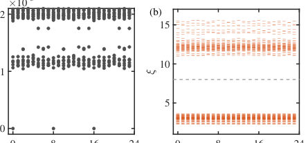
<figcaption class="paper-figure-caption"><b>Fig 3.</b> FIG. 4. (a) The many-body energy spectrum obtained from ED for U = 1. The ground-state manifold has three-fold de- generacy with the total momenta (indexed by K) predicted by the generalized Pauli principle. (b) The particle entanglement spectrum of the ground states of N = 8 with a subsystem of NA = 3 particles. There are 1088 states below a entangle- ment gap denoted by the dashed line, in agreement with the counting of (1, 3) generalized Pauli principle. We perform the ED calculation for a system size of (N1, N2) = (4, 6).</figcaption>
</figure>
<figure class="paper-figure-card">

<figcaption class="paper-figure-caption"><b>Fig 4.</b> FIG. 3. (a) The ground-state energy from ED (subtracted by a constant for clarity) with respect to the interaction strength U for three different HF ansatz: fractional-Chern-insulator (FCI) ansatz, Fermi-liquid (FL) ansatz, and integer filling ansatz. (b) The occupation of mean-field states in momentum space for the ground state of the ansatz with lowest energy. (c) The mean-field band structure along high-symmetry lines obtained from SCHF calculation for U = 1 using the FCI ansatz. For comparison, the bare dispersion is plotted as grey lines. (d) The absolute value of Chern number (blue line) of the isolated mean-field band from SCHF and the many-body gap ∆3 = E4 −E3 (black line) from ED...</figcaption>
</figure>
</div>

<p><strong>Summary.</strong> This theoretical work explores the potential for creating fractional Chern insulators using ultracold atoms in twisted bilayer optical lattices. By applying advanced many-body techniques like Hartree-Fock and Exact Diagonalization, the authors demonstrate that atomic interactions can stabilize a topologically non-trivial phase. This paves the way for using highly tunable cold-atom systems to simulate complex correlated topological matter.</p>
<p><strong>Why it may be interesting.</strong> This work directly bridges the gap between ultracold atom platforms (a core AMO topic) and advanced condensed matter physics concepts like topological phases, making it highly relevant for AMO theorists.</p>
<details>
<summary>Detailed structure</summary>
<p><strong>Main problem.</strong> The paper investigates the theoretical realization of strongly correlated topological phases, specifically the fractional Chern insulator, using ultracold atoms trapped in twisted bilayer optical lattices.</p>
<p><strong>Main result.</strong> The authors show that atomic interactions can induce a non-zero Chern number and a fractional Chern insulator phase, even though the non-interacting system is topologically trivial.</p>
<p><strong>Method.</strong> The study employs theoretical calculations including Self-Consistent Hartree-Fock (SCHF) methods and Exact Diagonalization (ED) to analyze the interacting many-body Hamiltonian.</p>
<p><strong>Model / system.</strong> The system is a twisted bilayer optical lattice implemented with ultracold atoms, where the layer degree of freedom is encoded in atomic spin states. The model includes single-particle hopping terms and contact interactions.</p>
<p><strong>Key observables.</strong> Chern number, particle entanglement spectrum (PES), ground-state energy, and the many-body gap ($\Delta_3$).</p>
<p><strong>Important parameters / regimes.</strong> Twist angle ($  heta$), dimensionless interaction strength ($U$), and fractional filling ($
u$).</p>
<p><strong>Assumptions / limitations.</strong> The analysis relies on mean-field approximations (Hartree-Fock) and assumes specific partial occupations (e.g., fractional-Chern-insulator ansatz) for the interacting system.</p>
<p><strong>Figures summary.</strong> Figures illustrate the moiré potential profiles, the band structure analysis showing the emergence of a Chern number via SCHF, and the PES confirming the fractional nature of the ground state.</p>
<p><strong>Paper structure.</strong> The paper first establishes the physical platform (twisted lattices) and the Hamiltonian. It then analyzes the single-particle band structure and uses SCHF to show interaction-induced topology. Finally, it uses ED and PES analysis to confirm the fractional Chern insulator phase.</p>
</details>
<details>
<summary>Abstract</summary>
<p>Twisted bilayer materials provide a versatile platform for realizing novel topological states. Motivated by recent experimental realization of atomic Bose-Einstein condensates in twisted bilayer optical lattices, we theoretically investigate topological states for cold atoms trapped in such a system. At single-particle level, the system hosts nearly flat moiré bands under appropriate experimental parameters. Although these noninteracting bands are topologically trivial in the Altland-Zirnbauer classification, we find that atomic interactions can induce a flat Chern band based on self-consistent Hartree-Fock calculations. Furthermore, exact diagonalization identifies a fractional Chern insulator phase at fractional filling. Our work thus paves the way for exploring strongly correlated topological phases in highly tunable twisted bilayer optical lattices.</p>
</details>
<p><sub><a href="#top">↑ back to top</a></sub></p>

<p><a id="paper-2609.09294"></a></p>
<h3 id="bell-tests-for-collider-decay-processes"><a href="http://arxiv.org/abs/2609.09294v1">Bell tests for collider decay processes</a></h3>
<p><strong>Authors:</strong> Danilo M. Fucci, Alexandre C. Orthey, Alan J. Barr, Christopher G. Timpson<br>
<strong>Type:</strong> theory · <strong>Category:</strong> other · <strong>PDF:</strong> <a href="https://arxiv.org/pdf/2609.09294v1">https://arxiv.org/pdf/2609.09294v1</a><br>
<strong>Analysis basis:</strong> full PDF text, analyzed in chunks
<strong>Topic relevance:</strong> 🔥 <code>quantum measurements</code> <strong>4/5</strong></p>
<div class="figure-strip-hint">↔ Scroll figures horizontally</div>
<div class="paper-figures-scroll">
<figure class="paper-figure-card">
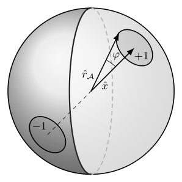
<figcaption class="paper-figure-caption"><b>Fig 1.</b> Figure 1. Geometric coarse graining defined by the analysis axis ˆx. The shaded antipodal caps of angular radius φ give outcomes +1 and −1; directions outside them give the geo- metric no-click outcome ∅. The vector ˆrA is drawn on the boundary of the +1 cap, so that φ is the angle between ˆrA and ˆx. The cutaway is only illustrative.</figcaption>
</figure>
</div>

<p><strong>Summary.</strong> This work proposes a method to perform Bell tests using particle decay products from colliders, circumventing standard loopholes by focusing on joint acceptance events. It derives a Bell inequality whose violation proves either quantum nonlocality or measurement contextuality, provided certain operational equivalences hold true.</p>
<p><strong>Why it may be interesting.</strong> While focused on particle physics, the rigorous mathematical framework for closing loopholes via operational equivalence and contextuality is highly relevant to foundational quantum information theory and quantum measurement theory.</p>
<details>
<summary>Detailed structure</summary>
<p><strong>Main problem.</strong> The paper develops a theoretical framework to formulate and analyze Bell tests applicable to particle physics processes observed at colliders, specifically addressing loopholes introduced by detector acceptance.</p>
<p><strong>Main result.</strong> A violation of a derived continuous-input Bell inequality, under assumptions of measurement independence and operational equivalence, witnesses either Bell nonlocality or joint-acceptance contextuality.</p>
<p><strong>Method.</strong> The methodology involves deriving local hidden-variable bounds for correlations measured from joint acceptance events and comparing these bounds to quantum mechanical predictions.</p>
<p><strong>Model / system.</strong> The system models the decay of parent qubits into daughter particles whose momenta act as spin analyzers, utilizing joint angular probability densities derived from collider decay kinematics.</p>
<p><strong>Key observables.</strong> The Bell functional $B = -\mathbb{E}[\hat{x} \cdot \hat{y} a b]$, the effective spin-analyzing power ($\eta$), and the joint acceptance event rate ($N_D$).</p>
<p><strong>Important parameters / regimes.</strong> The continuous input settings $\hat{x}, \hat{y} \in S^2$, and the optimal coarse-graining width ($\phi_{opt}$).</p>
<p><strong>Assumptions / limitations.</strong> The analysis critically assumes measurement independence and the operational equivalence of local and joint-acceptance events across all measurement settings.</p>
<p><strong>Figures summary.</strong> Figure 1 illustrates the geometric coarse-graining defined by the analysis axis $\hat{x}$, showing the antipodal caps for outcomes $+1$ and $-1$, and the no-click outcome $\emptyset$.</p>
<p><strong>Paper structure.</strong> The paper progresses from establishing the difficulty of Bell testing in colliders to deriving the necessary conditions (operational equivalence) to close loopholes, culminating in the derivation and analysis of the continuous-input Bell inequality.</p>
</details>
<details>
<summary>Abstract</summary>
<p>We propose Bell tests for collider decays using independently sampled analysis axes as settings and detector regions to assign binary or null outcomes. We show that a Bell violation requires postselection, opening a loophole. However, under measurement independence and operational equivalence of acceptance events across settings, any local model exploiting the loophole must be nonclassical in the sense of measurement contextuality. We derive a Bell inequality violated by singlet correlations when the effective spin-analyzing powers are sufficiently high. Its violation then witnesses Bell nonlocality or measurement contextuality.</p>
</details>
<p><sub><a href="#top">↑ back to top</a></sub></p>

<p><a id="paper-2609.10072"></a></p>
<h3 id="haar-bayesian-pure-state-prediction-under-relative-entropy-loss-arbitrary-effect-reduction-and-global-optimality"><a href="http://arxiv.org/abs/2609.10072v1">Haar-Bayesian Pure-State Prediction under Relative-Entropy Loss: Arbitrary-Effect Reduction and Global Optimality</a></h3>
<p><strong>Authors:</strong> Masahito Hayashi, Ayanava Dasgupta, Naqueeb Ahmad Warsi<br>
<strong>Type:</strong> theory · <strong>Category:</strong> quantum information and computing · <strong>PDF:</strong> <a href="https://arxiv.org/pdf/2609.10072v1">https://arxiv.org/pdf/2609.10072v1</a><br>
<strong>Analysis basis:</strong> full PDF text, analyzed in chunks
<strong>Topic relevance:</strong> 🔥 <code>quantum measurements</code> <strong>4/5</strong></p>
<div class="figure-strip-hint">↔ Scroll figures horizontally</div>
<div class="paper-figures-scroll">
<figure class="paper-figure-card">
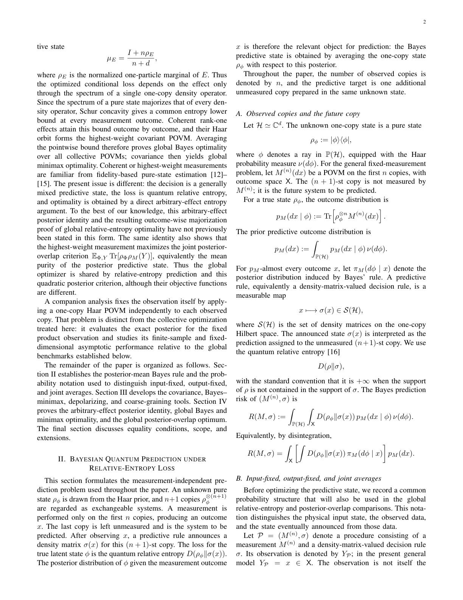
<figcaption class="paper-figure-caption"><b>Fig 1.</b> Low-resolution page preview, page 2</figcaption>
</figure>
<figure class="paper-figure-card">

<figcaption class="paper-figure-caption"><b>Fig 2.</b> Low-resolution page preview, page 3</figcaption>
</figure>
<figure class="paper-figure-card">

<figcaption class="paper-figure-caption"><b>Fig 3.</b> Low-resolution page preview, page 4</figcaption>
</figure>
<figure class="paper-figure-card">

<figcaption class="paper-figure-caption"><b>Fig 4.</b> Low-resolution page preview, page 5</figcaption>
</figure>
<figure class="paper-figure-card">
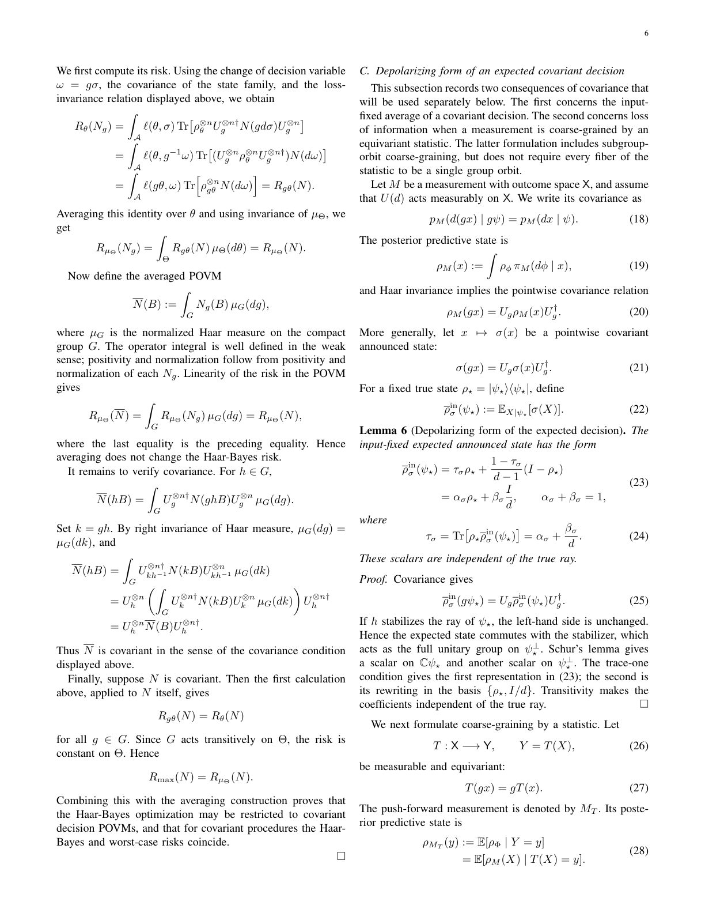
<figcaption class="paper-figure-caption"><b>Fig 5.</b> Low-resolution page preview, page 6</figcaption>
</figure>
</div>

<p><strong>Summary.</strong> This work solves the optimal quantum state prediction problem under a Haar prior by minimizing the quantum relative entropy loss. It proves that the optimal measurement is the highest-weight covariant POVM, which is globally Bayes optimal and minimax. The key technical tool is an 'arbitrary-effect reduction' that simplifies the complex optimization over all possible measurements.</p>
<p><strong>Why it may be interesting.</strong> The rigorous derivation of global optimality for quantum state estimation using information-theoretic measures like relative entropy is fundamental to quantum estimation theory, providing concrete bounds for quantum measurement strategies.</p>
<details>
<summary>Detailed structure</summary>
<p><strong>Main problem.</strong> The paper determines the optimal measurement strategy (POVM) and subsequent decision rule for predicting an unmeasured copy of a pure quantum state, minimizing the quantum relative entropy loss.</p>
<p><strong>Main result.</strong> The global Bayes optimal measurement is the highest-weight covariant POVM, which is also globally minimax, yielding an exact minimum risk $h_d((n+1)/(n+d))$ and maximizing the mean posterior purity.</p>
<p><strong>Method.</strong> The analysis uses an 'arbitrary-effect reduction' identity to simplify the optimization over all POVMs, showing that the optimal outcome is achieved by coherent rank-one effects.</p>
<p><strong>Model / system.</strong> The system involves an unknown pure state $
ho_\phi$ drawn from the Haar distribution on a $d$-dimensional Hilbert space. The process models measuring $n$ copies via a POVM and predicting one unmeasured copy.</p>
<p><strong>Key observables.</strong> Quantum relative entropy loss, Bayes prediction risk, mean posterior purity, and the posterior predictive state $\mu_E$.</p>
<p><strong>Important parameters / regimes.</strong> The number of observed copies ($n$), the dimension of the Hilbert space ($d$), and the ratio $r = (n+1)/(n+d)$.</p>
<p><strong>Assumptions / limitations.</strong> The analysis assumes a Haar prior distribution for the unknown pure state and relies heavily on the arbitrary-effect reduction identity.</p>
<p><strong>Figures summary.</strong> No specific figures were described, but the notes reference TABLE I for basic notation regarding the prediction problem.</p>
<p><strong>Paper structure.</strong> The paper establishes the problem setup, derives the optimal predictive state using the arbitrary-effect identity, proves global optimality by comparing entropy bounds, and finally identifies the highest-weight covariant POVM as the global solution.</p>
</details>
<details>
<summary>Abstract</summary>
<p>We study Haar-Bayesian prediction of one unmeasured copy of an unknown finite-dimensional pure quantum state after an arbitrary collective measurement on $n$ observed copies. Performance is evaluated by quantum relative entropy. For a fixed measurement, the Bayes predictive state is the posterior mean and the optimized conditional loss is its entropy. We then optimize the measurement over all POVMs on the symmetric subspace. For every nonzero positive effect $E$, the corresponding posterior predictive state is $μ_E=(I+nρ_E)/(n+d)$, where $ρ_E$ is the normalized one-particle marginal of $E$. Since a pure spectrum majorizes every density-operator spectrum, this identity gives an outcome-wise entropy lower bound. Coherent rank-one effects attain the bound, and their Haar orbit yields the highest-weight covariant POVM. Hence this POVM is globally Bayes optimal over all collective measurements and, by covariance, globally minimax. Its exact risk is $h_d((n+1)/(n+d))$, where $h_d(r)=-r\log r-(1-r)\log((1-r)/(d-1))$. The same arbitrary-effect reduction shows that the highest-weight POVM also maximizes the joint overlap between the latent pure state and its posterior predictive state, equivalently the mean posterior purity, with optimum $((n+1)^2+d-1)/(n+d)^2$.</p>
</details>
<p><sub><a href="#top">↑ back to top</a></sub></p>

<p><a id="paper-2609.10514"></a></p>
<h3 id="optimal-low-rank-quantum-state-tomography-with-bounded-sample-joint-measurements"><a href="http://arxiv.org/abs/2609.10514v1">Optimal Low-Rank Quantum State Tomography with Bounded-Sample Joint Measurements</a></h3>
<p><strong>Authors:</strong> Ashwin Nayak, Xingyu Zhou<br>
<strong>Type:</strong> theory · <strong>Category:</strong> quantum information and computing · <strong>PDF:</strong> <a href="https://arxiv.org/pdf/2609.10514v1">https://arxiv.org/pdf/2609.10514v1</a><br>
<strong>Analysis basis:</strong> full PDF text, analyzed in chunks
<strong>Topic relevance:</strong> 🔥 <code>quantum measurements</code> <strong>4/5</strong></p>
<div class="figure-strip-hint">↔ Scroll figures horizontally</div>
<div class="paper-figures-scroll">
<figure class="paper-figure-card">

<figcaption class="paper-figure-caption"><b>Fig 1.</b> Low-resolution page preview, page 2</figcaption>
</figure>
<figure class="paper-figure-card">
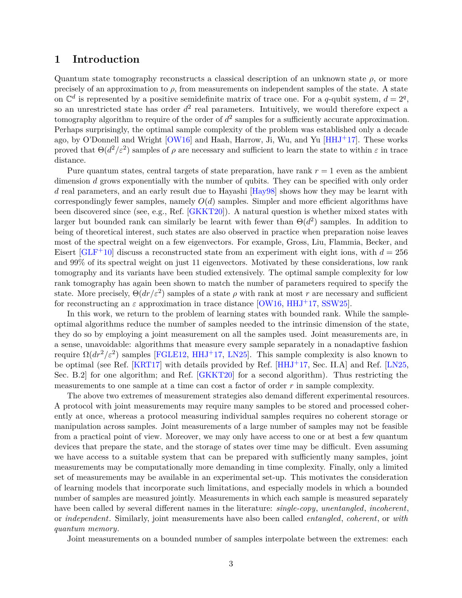
<figcaption class="paper-figure-caption"><b>Fig 2.</b> Low-resolution page preview, page 3</figcaption>
</figure>
<figure class="paper-figure-card">
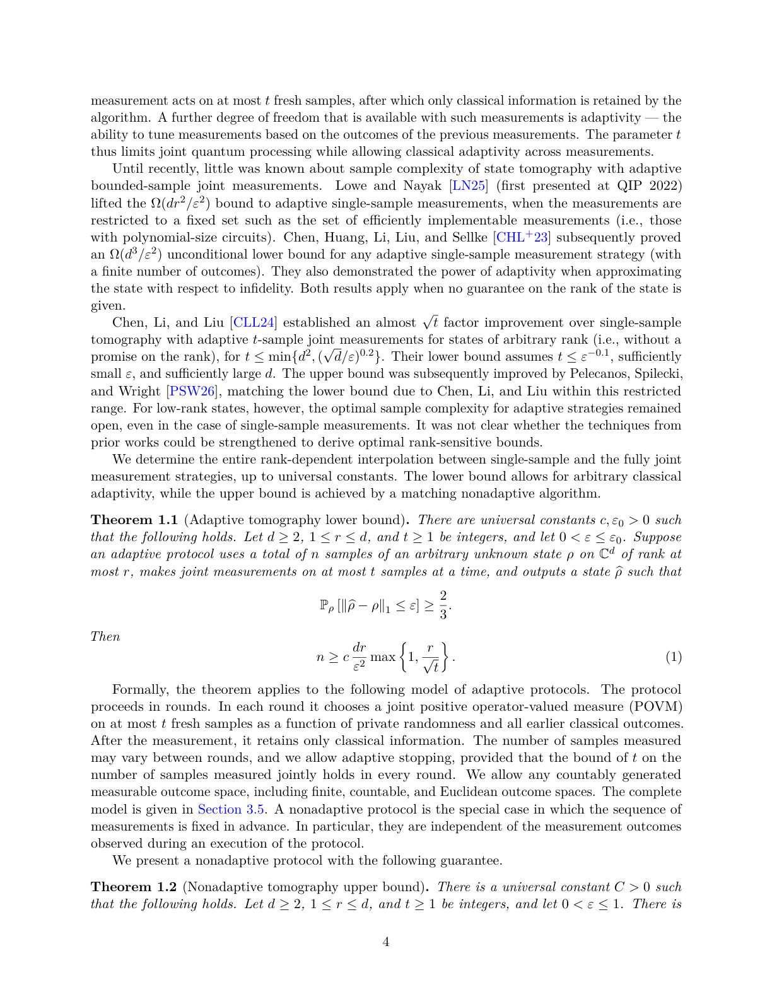
<figcaption class="paper-figure-caption"><b>Fig 3.</b> Low-resolution page preview, page 4</figcaption>
</figure>
<figure class="paper-figure-card">
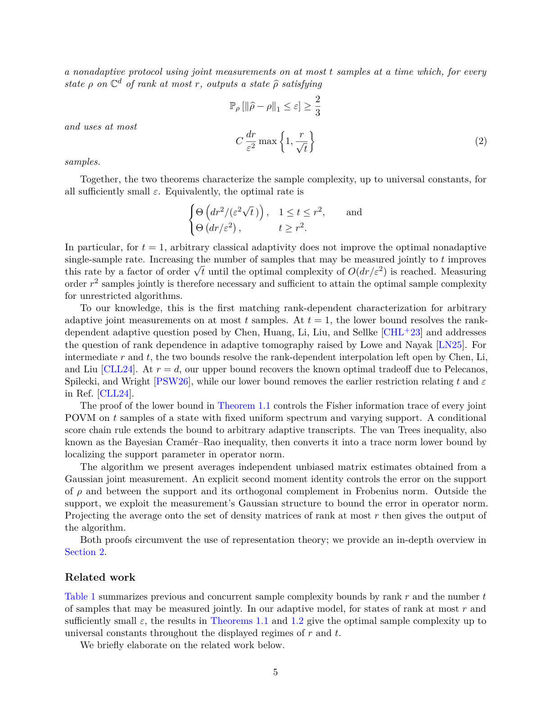
<figcaption class="paper-figure-caption"><b>Fig 4.</b> Low-resolution page preview, page 5</figcaption>
</figure>
<figure class="paper-figure-card">

<figcaption class="paper-figure-caption"><b>Fig 5.</b> Low-resolution page preview, page 6</figcaption>
</figure>
</div>

<p><strong>Summary.</strong> This paper rigorously determines the optimal sample complexity for low-rank quantum state tomography when measurements are restricted to jointly sampling at most $t$ instances. It establishes a matching lower and upper bound, showing that joint measurements provide a $\sqrt{t}$ improvement over single-sample measurements. The methodology combines advanced information theory (van Trees inequality) with constructive nonadaptive protocols.</p>
<p><strong>Why it may be interesting.</strong> This work provides fundamental, quantitative bounds on the data requirements for quantum state characterization, which is crucial for designing practical quantum tomography experiments and understanding the limits of quantum measurement.</p>
<details>
<summary>Detailed structure</summary>
<p><strong>Main problem.</strong> Determining the optimal sample complexity required to estimate a low-rank quantum state ($    ext{rank} \le r$) given measurements that can jointly act on at most $t$ samples.</p>
<p><strong>Main result.</strong> The optimal sample complexity is $\Theta\left(rac{dr}{\epsilon^2} \max\left(1, rac{r}{\sqrt{t}}
ight)
ight)$, matching both adaptive (lower bound) and nonadaptive (upper bound) protocols.</p>
<p><strong>Method.</strong> The lower bound is established using the van Trees inequality applied to the Fisher information trace, while the upper bound is achieved via a nonadaptive protocol based on Gaussian joint measurements.</p>
<p><strong>Model / system.</strong> The system involves estimating an unknown quantum state $
ho$ on $\mathbb{C}^d$ with a constrained rank $r$. The measurements are modeled as joint Positive Operator-Valued Measures (POVMs) acting on $t$ samples.</p>
<p><strong>Key observables.</strong> Trace norm error ($\|\hat{
ho} - 
ho\|_1$), Fisher information trace, and the required sample complexity ($n$).</p>
<p><strong>Important parameters / regimes.</strong> Ambient dimension ($d$), state rank ($r$), maximum joint samples ($t$), and target error ($\epsilon$).</p>
<p><strong>Assumptions / limitations.</strong> The analysis assumes sufficiently small error $\epsilon$ and relies on advanced measure-theoretic tools (e.g., domination by reference measures) for the lower bound proof.</p>
<p><strong>Figures summary.</strong> Not specified in the notes, but the paper compares various sample complexity bounds across different regimes of $r$ and $t$ (Table 1 mentioned).</p>
<p><strong>Paper structure.</strong> The paper develops the lower bound using Fisher information and the van Trees inequality, and establishes the matching upper bound using a nonadaptive Gaussian measurement protocol. The mathematical rigor is supported by detailed appendices covering measure theory and likelihood density construction.</p>
</details>
<details>
<summary>Abstract</summary>
<p>We determine the optimal sample complexity of low-rank quantum state tomography when each measurement may act jointly on at most $t$ samples. For sufficiently small $\varepsilon$, estimating an unknown state on $\mathbb{C}^d$ of rank at most $r$ to trace norm error $\varepsilon$ with constant success probability requires, and is achievable with, $$   Θ\left(   \frac{dr}{\varepsilon^2}   \max\left\{1,\frac r{\sqrt t}\right\}   \right)$$ samples. The lower bound allows the protocol to choose each joint measurement adaptively using all previous classical outcomes; the matching upper bound is nonadaptive. Thus joint measurements on at most $t$ samples improve the complexity of algorithms making single-sample measurements by at most a factor $\sqrt t$. Further, measuring order $r^2$ samples jointly is necessary and sufficient to attain the unrestricted collective rate.   For the lower bound, we vary the support of a state with fixed uniform spectrum and bound the Fisher information trace of every joint measurement on $t$ samples. The adaptive Fisher chain rule and the van Trees inequality then give the trace norm lower bound. For the upper bound, we construct and analyze a nonadaptive tomography protocol based on a Gaussian joint measurement. An explicit second moment identity and a conditional Gaussian law outside the state's support give a rank-dependent error analysis, yielding the matching rate.</p>
</details>
<p><sub><a href="#top">↑ back to top</a></sub></p>

<p><a id="paper-2609.10448"></a></p>
<h3 id="coherent-advantage-in-the-computational-expressivity-of-excitonic-networks"><a href="http://arxiv.org/abs/2609.10448v1">Coherent advantage in the computational expressivity of excitonic networks</a></h3>
<p><strong>Authors:</strong> Matthew Du, Carlos Floyd, Dipti Jasrasaria, Suriyanarayanan Vaikuntanathan<br>
<strong>Type:</strong> theory · <strong>Category:</strong> other · <strong>PDF:</strong> <a href="https://arxiv.org/pdf/2609.10448v1">https://arxiv.org/pdf/2609.10448v1</a><br>
<strong>Analysis basis:</strong> full PDF text, analyzed in chunks
<strong>Topic relevance:</strong> <code>analog quantum simulation</code> <strong>3/5</strong> · <code>driven-dissipative phase transition</code> <strong>3/5</strong> · <code>methods for driven-dissipative</code> <strong>3/5</strong> · <code>Tavis-Cummings &amp; cavity-many-emitter</code> <strong>2/5</strong> · <code>correlated / nonlocal dissipation</code> <strong>2/5</strong> · <code>non-equilibrium universality</code> <strong>2/5</strong> · <code>Keldysh / 2PI / non-Gaussian methods</code> <strong>1/5</strong></p>
<div class="figure-strip-hint">↔ Scroll figures horizontally</div>
<div class="paper-figures-scroll">
<figure class="paper-figure-card">

<figcaption class="paper-figure-caption"><b>Fig 1.</b> FIG. 1. Overview: computational expressivity of open quantum networks. (a) In an excitonic network of molecular chromophores, excitations become delocalized through coherent (wave-like) transport mediated by dipole- dipole coupling. Using a scaffold (e.g., protein or DNA), the couplings can be tuned by adjusting the position or orienta- tions of the chromophores. (b) The computational expressiv- ity of an artificial neural network increases with model size. Here the expressivity is measured by the number of turning points. (c) Excitonic network as a computational platform. Each site is associated with a transition energy of excitation and couplings to other sites. Excitations are pumped into...</figcaption>
</figure>
<figure class="paper-figure-card">
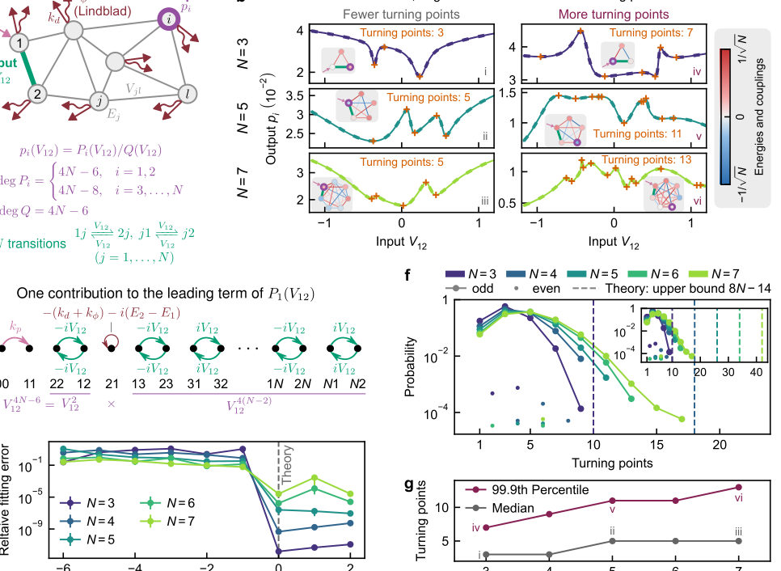
<figcaption class="paper-figure-caption"><b>Fig 2.</b> FIG. 2. Computational expressivity grows with system size in the coherent regime. (a) Model of excitonic networks as a computational platform. An excitation on site j = 1, . . . , N has transition energy Ej and can hop to site l according to coupling Vjl = V ∗ lj. Excitations are pumped into site 1 at rate kp and decay from any site at rate kd. Excitations at each site also dephase at a constant rate kφ, as described by the Lindblad master equation. The input of the computation is the coupling V12 between the pumped site 1 and a not-pumped site 2, and the output is the excitation probability pi of a site i at steady state. (b) Examples of computational input-output relations pi(V12) for...</figcaption>
</figure>
<figure class="paper-figure-card">
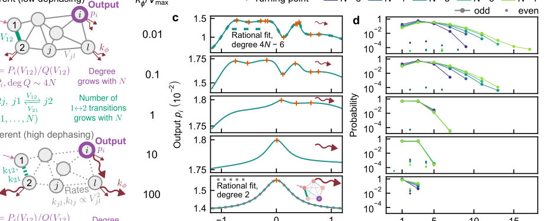
<figcaption class="paper-figure-caption"><b>Fig 3.</b> FIG. 3. Coherent advantage in computational expressivity. (a, b) Computational expressivity of excitonic networks in the coherent regime of low dephasing (a) and the incoherent regime of high dephasing (b). The input-output relation pi(V12) is given by a rational function whose degree and thus expressivity grows with system size N in the coherent regime (a) but is independent of N in the incoherent regime. The dependence on N can be understood in terms of the number of 1 ↔2 transitions (i.e., mediated by V12) in each regime. (c) Examples of input-output relation for varying dephasing rate kφ (in units of the maximum absolute coupling Vmax). The dashed lines are a fit to rational functions,...</figcaption>
</figure>
<figure class="paper-figure-card">

<figcaption class="paper-figure-caption"><b>Fig 4.</b> FIG. 4. Coherent advantage in computational expres- sivity occurs at lower temperatures. (a) Model of ex- citonic network as a computational platform in the pres- ence of dephasing induced by a thermal bath. The dephas- ing is characterized by temperature T and spectral density J(ω), as described by the Redfield master equation. (b) His- togram of turning points in the input-output relations of ran- dom excitonic networks for varying T (in units of ∆E0 = 2Vmax √</figcaption>
</figure>
</div>

<p><strong>Summary.</strong> This paper treats excitonic molecular networks as quantum computational substrates, demonstrating that the ability to compute complex functions (expressivity) depends critically on quantum coherence. By analyzing the steady-state output as a rational function of couplings, the authors prove that coherence allows this expressivity to scale with system size, a feature lost when decoherence dominates.</p>
<p><strong>Why it may be interesting.</strong> This work directly bridges quantum optics/AMO physics with computation theory, providing a physical mechanism (coherence) that dictates the computational power of an open quantum system, which is highly relevant for quantum information science.</p>
<details>
<summary>Detailed structure</summary>
<p><strong>Main problem.</strong> The study investigates whether coherent quantum dynamics in excitonic networks can provide a computational expressivity that scales with system size, offering an energy-efficient alternative to classical AI computation.</p>
<p><strong>Main result.</strong> Coherence is established as a quantifiable resource for expressive computation, as the input-output relation's complexity scales linearly with network size in the coherent regime, a scaling lost in the presence of strong dephasing.</p>
<p><strong>Method.</strong> The authors analyze the steady-state population $\pi_i(V_{12})$ by deriving its mathematical form as a rational function of the intersite couplings $V_{12}$ using the density matrix formalism.</p>
<p><strong>Model / system.</strong> The system is a driven-dissipative excitonic network of molecular chromophores, modeled by a Lindblad master equation. The dynamics are governed by the Hamiltonian and dissipation terms, with the input being the intersite couplings $V_{jl}$ and the output being the steady-state excitation probabilities.</p>
<p><strong>Key observables.</strong> Computational expressivity, quantified by the polynomial degrees of the rational function $\pi_i(V_{12}) = \Pi(V_{12}) / Q(V_{12})$, and the number of turning points in the output function.</p>
<p><strong>Important parameters / regimes.</strong> The degree of dephasing ($k_\phi$) and the system size ($N$) are critical parameters; the coherent regime corresponds to low dephasing.</p>
<p><strong>Assumptions / limitations.</strong> The analysis assumes the dynamics can be accurately described by a rational function of the couplings, and that the system is restricted to the zero- and single-excitation manifolds.</p>
<p><strong>Figures summary.</strong> Figures illustrate the contrast between coherent (wave-like) and incoherent (dissipative) transport, showing how computational expressivity grows with $N$ in the coherent regime and confirming the rational function scaling ($\sim 4N$) in the low dephasing limit.</p>
<p><strong>Paper structure.</strong> The paper first introduces the excitonic network as a computational platform, deriving the input-output relation $\pi_i(V_{12})$ as a rational function. It then contrasts the scaling in the coherent regime (linear growth with $N$) versus the incoherent regime (constant expressivity), concluding that coherence is the source of enhanced computational power.</p>
</details>
<details>
<summary>Abstract</summary>
<p>The rising energy consumption of AI has generated interest in physical systems as alternative substrates for trainable computation. Recent experimental advances have enabled precise control over the couplings between molecular chromophores, which give rise to coherent excitation dynamics. Here, we study driven-dissipative excitonic networks as a computational platform, where the intersite couplings define the input and the steady state defines the output. We show that coherence enables computational expressivity to scale with network size, analogous to artificial neural networks. Both this scaling and the overall expressivity are suppressed by strong dephasing. Our work establishes coherence as a resource for expressive computation in nonequilibrium quantum systems.</p>
</details>
<p><sub><a href="#top">↑ back to top</a></sub></p>
<hr>
<p>
<a href="index.html">← Index</a>
 · <a href="papers_02.html">Next →</a>
</p>
<hr>

</body>
</html>
